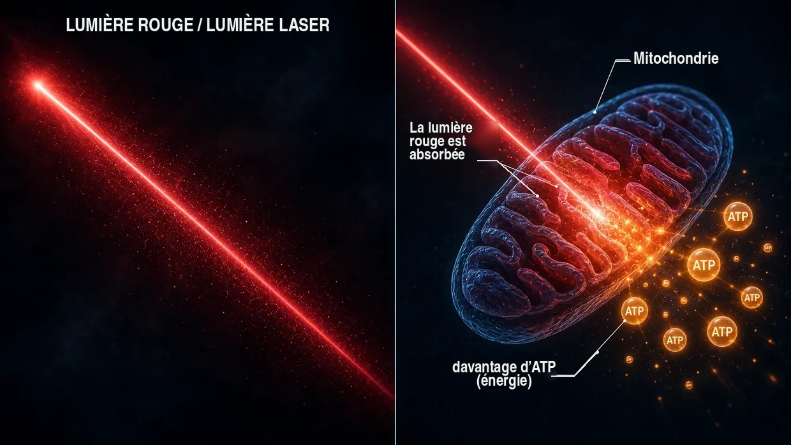

Sources scientifiques et données probantes issues de la pratique clinique
Cette page montre le fondement sur lequel repose tout ce que j’écris sur ce site. Mon modèle est mon interprétation personnelle de ce qui s’est produit au niveau cellulaire dans le cas de mes acouphènes. Mais les différents éléments qui le composent — les ponts de réticulation, ou crosslinkers, entre les filaments d’actine des petits cils sensoriels, l’activation des calpaïnes sous l’effet du bruit, le métabolisme de l’ATP, la réparation par XIRP2, le gain central dans le cerveau, l’axe HPA local dans la cochlée, les effets mitochondriaux du Q10, des vitamines B et de la niacine — ne sont pas des élucubrations. Ils sont documentés par la recherche et éprouvés dans la pratique médicale.
Introduction : deux formes de données probantes
Une remarque honnête en préambule : je réunis sur cette page deux formes de données probantes — et je les place délibérément côte à côte, sans accorder d’emblée plus de poids à l’une qu’à l’autre.
Premièrement : les études mécanistiques issues de la recherche fondamentale sur les crosslinkers, les calpaïnes et autres éléments. Il s’agit de travaux évalués par les pairs (c’est-à-dire examinés par des spécialistes indépendants), publiés dans des revues comme Nature Communications, Journal of Neuroscience, PNAS ou eLife. Ils montrent comment fonctionne la machinerie cellulaire (autrement dit, les processus au sein des différentes cellules) — comment les crosslinkers stabilisent les stéréocils, comment les calpaïnes s’activent sous l’effet du bruit, comment XIRP2 stabilise tant bien que mal les ruptures, comment l’augmentation de l’ATP restaure l’audition après des dommages dus au bruit dans les limites que permet la capacité physique propre à chacun. Ces études sont indispensables pour comprendre mon modèle explicatif des acouphènes dus au bruit.
Deuxièmement : les données probantes issues de la pratique clinique de médecins expérimentés (c’est-à-dire ce que des médecins expérimentés ont directement observé et documenté, pendant des années, chez de vrais patients). Il y a des voix comme celle du Dr Lutz Wilden, qui traite sans interruption depuis 1987 — soit depuis plus de 35 ans — des patients atteints de troubles de l’oreille interne par thérapie laser de faible intensité et réalise systématiquement des audiogrammes avant et après le traitement à titre de documentation standard. À cela s’ajoutent des milliers d’utilisateurs de lasers à domicile dans le monde entier, qui accompagnent leur autotraitement d’audiométries de contrôle. En Suisse, Tinnitool a également pris en charge, depuis les années 1990, des milliers de patients selon la même logique d’action (LLLT → augmentation de l’ATP dans les cellules ciliées). Viennent ensuite le groupe de Hahn à Prague (540 patients dans deux études publiées), l’université de Kyoto au Japon et une équipe de recherche brésilienne — avec, dans chaque cas, des améliorations mesurables dès lors que le laser était assez puissant. Plus bas, je replace honnêtement dans leur contexte les études menées avec un laser trop faible qui n’ont rien trouvé lors d’un test équitable. Ou encore le Dr Dietrich Klinghardt, avec son travail de plusieurs décennies sur les charges corporelles en métaux lourds et en substances toxiques. Cette expérience issue de la pratique clinique n’est, pour l’essentiel, pas publiée dans les grandes revues scientifiques (comme Nature Communications) — et cela tient à des raisons dont Wilden parle lui-même. Mais cela ne change rien au fait qu’au cours des dernières décennies, un nombre véritablement considérable de patients réels se sont rétablis par cette voie, preuves audiométriques à l’appui.
Pourquoi ces deux sources comptent
Je trouve plus honnête de placer ces deux sources de données probantes côte à côte que de faire comme si seuls les travaux évalués par les pairs détenaient une vérité digne d’être prise au sérieux. À mes yeux, cela tient au fait qu’une grande partie des financements de la recherche sur les acouphènes va plutôt au développement d’appareils auditifs et aux filières de développement de médicaments protégées par des brevets. Pour les associations de nutriments non brevetables, les protocoles laser spécifiques à haute dose ou les protocoles de détoxification, il n’existe tout simplement aucun intérêt institutionnel pour la recherche.
Je ne suis ni médecin, ni scientifique, ni chercheur. Je suis une personne autrefois concernée qui a complètement surmonté ses acouphènes à deux reprises et qui a lu, fait des recherches et essayé énormément de choses de manière obsessionnelle. Les audiogrammes publiés sur ce site documentent mon premier épisode ainsi que l’amélioration au cours de mon rétablissement. Lorsque je cite ici une étude ou un médecin, cela ne signifie pas qu’il s’agit d’une preuve que ma démarche fonctionnera chez vous. Cela signifie que les différents éléments sur lesquels je m’appuie sont pris au sérieux dans la recherche et dans la pratique clinique. En cas de symptômes aigus — en particulier d’acouphènes aigus ou de perte auditive — consultez d’abord un médecin ORL afin de faire rechercher d’éventuelles causes organiques.
Une chose avant tout, avant d’entrer dans le détail : la principale conclusion de toutes mes recherches est un schéma que j’ai retrouvé encore et encore — partout où la production d’énergie dans les cellules ciliées a été sensiblement augmentée, les acouphènes se sont améliorés. Trois voies entièrement différentes, un dénominateur commun. Je vous le montre en détail plus bas : si vous voulez aller tout de suite à cet endroit, cliquez ici. Pour tous les autres, je commence par les fondements — comment l’oreille est construite et ce qui s’y détériore.
Partie 1 : études mécanistiques issues de la recherche fondamentale
Crosslinkers entre les filaments d’actine des stéréocils
Sur la page principale, je compare les petits cils sensoriels à un paquet de spaghettis crus maintenu ensemble par de courts ponts protéiques — les ponts de réticulation, ou crosslinkers. Ces crosslinkers ne sont pas une invention de ma part. Il s’agit de trois familles de protéines bien précises — la plastine/fimbrine (PLS1), l’espine (ESPN) et la fascine-2 (FSCN2) — dont l’existence et la fonction dans les petits cils sensoriels sont documentées au niveau moléculaire depuis plus de 20 ans.
Krey JF, Krystofiak ES, Dumont RA, et al. (2016). Plastin 1 widens stereocilia by transforming actin filament packing from hexagonal to liquid. Journal of Cell Biology, 215(4), 467–482. PMID: 27811163. Lien
L’étude clé pour quantifier les crosslinkers. À l’aide de la spectrométrie de masse, Krey et al. ont démontré qu’un seul stéréocil contient environ 30 500 molécules de plastine-1, 16 100 molécules de fascine-2 et 14 800 molécules d’espine entre les filaments d’actine. Après l’actine elle-même, la plastine-1 est la deuxième protéine la plus abondante de l’ensemble du stéréocil. Les souris dépourvues de plastine-1 ou de fascine-2 fonctionnelle présentaient une fonction auditive réduite, et les doubles mutants étaient les plus touchés. Les stéréocils sans plastine-1 sont plus courts et plus fins que ceux de type sauvage. C’est la preuve expérimentale directe que les crosslinkers assurent bel et bien l’intégrité structurelle des petits cils sensoriels.
Perrin BJ, Strandjord DM, Narayanan P, et al. (2013). β-Actin and Fascin-2 Cooperate to Maintain Stereocilia Length. Journal of Neuroscience, 33(19), 8114–8121. PMID: 23658152. Lien
Preuve directe de ce qui se passe lorsque la fascine-2 perd sa fonction : les souris porteuses d’une mutation de la fascine-2 présentent une perte auditive progressive dans les hautes fréquences et un raccourcissement spécifique des deuxième et troisième rangées de stéréocils. La variante mutante de la fascine-2 se lie encore à l’actine, mais elle ne peut plus réticuler efficacement les filaments — et c’est précisément ce qui fait perdre leur longueur aux petits cils. Il s’agit du même effet structurel final que celui que je décris sur la page principale pour la perte de crosslinkers due au bruit ; ici, il est simplement simulé par une mutation génétique plutôt que par un clivage sous l’action des calpaïnes.
Sekerková G, Zheng L, Loomis PA, et al. (2004). Espins are multifunctional actin cytoskeletal regulatory proteins in the microvilli of chemosensory and mechanosensory cells. Journal of Neuroscience, 24(23), 5445–5456. PMID: 15190118. Lien
La caractérisation structurelle de l’espine en tant que crosslinker de l’actine dans les stéréocils. L’espine est identifiée comme une protéine qui regroupe les filaments d’actine parallèles et ne peut pas être inhibée par le calcium — ce qui est important, car l’intérieur des stéréocils est exposé à des variations de calcium dans le cadre de leur fonctionnement normal. Les souris dont les espines sont défectueuses sont sourdes et présentent des troubles de l’équilibre. Chez l’être humain également, les mutations de l’espine provoquent une surdité héréditaire.
Ce que tout cela signifie, une fois mis bout à bout : si les trois crosslinkers — plastine/fimbrine, espine et fascine-2 — entraînent déjà, lorsqu’ils sont touchés par une mutation génétique ou invalidés, une perte auditive et des anomalies structurelles des stéréocils, il est biologiquement plausible qu’un clivage acquis sous l’action des calpaïnes et induit par le bruit, affectant ces crosslinkers ou des crosslinkers apparentés — tel que je le décris sur la page principale — puisse avoir le même effet structurel final.
Activation des calpaïnes sous l’effet du bruit
Sous l’effet du bruit, une quantité massive de calcium pénètre dans la cellule ciliée. Cette surcharge en calcium active les calpaïnes — des enzymes protéases dépendantes du calcium, qui clivent ensuite des protéines assurant la réticulation de l’actine. La réalité de ce mécanisme a été démontrée par deux laboratoires de recherche indépendants utilisant des inhibiteurs des calpaïnes différents.
Lai R, Fang Q, Wu F, Pan S, Haque K, Sha SH. (2023). Prevention of noise-induced hearing loss by calpain inhibitor MDL-28170 is associated with upregulation of PI3K/Akt survival signaling pathway. Frontiers in Cellular Neuroscience, 17, 1199656. Lien
Preuve directe du mécanisme des calpaïnes : le bruit active la µ-calpaïne et la m-calpaïne dans les cellules ciliées, et l’inhibiteur des calpaïnes MDL-28170 empêche à la fois la perte auditive et la perte de synapses. L’étude montre en outre que les calpaïnes clivent la protéine structurelle α-fodrine — une protéine de réticulation entre la spectrine et l’actine dans le cortex cellulaire. Il ne s’agit pas exactement du même type de crosslinker que les protéines plastine/espine/fascine-2 propres aux stéréocils, mais cela démontre que les calpaïnes sont activées sous l’effet du bruit et qu’elles attaquent des protéines assurant la réticulation de l’actine. Que les crosslinkers des stéréocils puissent eux aussi être touchés est une hypothèse plausible découlant de cette convergence.
Yamaguchi T, Yoneyama M, Ogita K. (2017). Calpain inhibitor alleviates permanent hearing loss induced by intense noise by preventing disruption of gap junction-mediated intercellular communication in the cochlear spiral ligament. European Journal of Pharmacology, 803, 187–194. PMID: 28366808. Lien
Confirme le mécanisme lésionnel des calpaïnes dans un deuxième laboratoire, avec un autre inhibiteur (PD150606). L’étude élargit le tableau à un deuxième site de lésion : sous l’effet du bruit, les calpaïnes s’attaquent également à la communication par jonctions communicantes dans le ligament spiral — la paroi latérale de la cochlée. Les dommages dus au bruit ne se limitent jamais à un seul endroit.
Lecture de fond : Fettiplace R, Hackney CM. (2006). The sensory and motor roles of auditory hair cells. Nature Reviews Neuroscience, 7(1), 19–29. — La synthèse classique sur la structure et le fonctionnement des cellules ciliées.
Réparation de l’actine par XIRP2 (phase 1)
Wagner EL, Im JS, Sala S, et al. (2023). Repair of noise-induced damage to stereocilia F-actin cores is facilitated by XIRP2 and its novel mechanosensor domain. eLife, 12, e72681. PMID: 37294664. Lien
Le travail mécanistique le plus important sur l’autoréparation des cellules ciliées. Sous l’effet du bruit, des « brèches » mesurables apparaissent dans la charpente d’actine des petits cils sensoriels. Chez la souris, elles sont refermées en l’espace d’une semaine par de la γ-actine fraîchement synthétisée. La protéine de réparation XIRP2 détecte mécaniquement les dégâts et déclenche la réparation. En l’absence de XIRP2, les dégâts persistent durablement.
Sur la page principale, je décris XIRP2 comme un « ruban adhésif ultra-résistant » qui stabilise tant bien que mal les points de rupture (phase 1). Dans cette étude, la véritable réparation de phase 2 — reconstruire de l’actine neuve et mettre en place de nouveaux crosslinkers — prend environ une semaine chez des souris de laboratoire parfaitement approvisionnées. Ce que cela signifie pour un être humain adulte stressé, qui se trouve en même temps pris dans la roue de hamster énergétique, est la question décisive — car il lui manque souvent précisément l’énergie dont cette réparation a besoin.
Financement des NIH (R01DC021176).
Augmenter l’ATP comme levier de réparation : AC102
C’est le cœur de mon protocole pour les acouphènes dus au bruit sur la piste pharmacologique : lorsque la cellule manque d’énergie, elle se répare, à mes yeux, trop lentement et de manière insuffisante pour suivre le rythme des sollicitations quotidiennes. Voici les études qui montrent que cette idée est prise au sérieux du point de vue pharmaceutique — une entreprise pharmaceutique berlinoise développe actuellement un médicament qui cible précisément ce mécanisme.
Rommelspacher H, Bera S, Brommer B, Ward R et al. (2024). A single dose of AC102 restores hearing in a guinea pig model of noise-induced hearing loss to almost prenoise levels. PNAS, 121(15), e2314763121. PMID: 38557194. Lien
L’étude centrale sur AC102. Les tests in vitro ont montré qu’AC102 augmente nettement la production cellulaire d’ATP tout en réduisant les espèces réactives de l’oxygène (ROS). Dans le modèle animal, une seule dose a amélioré l’audition de façon significative après un traumatisme sonore — ce que le titre de l’étude décrit comme un retour « presque au niveau d’avant le bruit » (concrètement : une amélioration de 13 à 31 dB pour une perte auditive moyenne de 80 dB induite par le bruit — amélioration significative, mais sans récupération complète). Les mécanismes — stimuler la production d’ATP, réduire les ROS et protéger les synapses — correspondent exactement à la mécanique de mon modèle, mais imposée ici par voie pharmacologique.
Tziridis K, Rasheed J, Kwiatkowska M, et al. (2025). A Single Dose of AC102 Reverts Tinnitus by Restoring Ribbon Synapses in Noise-Exposed Mongolian Gerbils. International Journal of Molecular Sciences, 26(11), 5124. Lien
Cette étude a également cherché à savoir si AC102 inversait les schémas comportementaux propres aux acouphènes. Résultat : oui, dans une large mesure — et les synapses à ruban entre les cellules ciliées et le nerf auditif se sont rétablies de façon significative. Preuve directe que le bombardement glutamatergique continu au niveau du nerf auditif cesse lorsque l’énergie cellulaire revient.
Nieratschker M, Yildiz E, Gerlitz M, et al. (2024). A preoperative dose of the pyridoindole AC102 improves the recovery of residual hearing in a gerbil animal model of cochlear implantation. Cell Death & Disease, 15, 531. Lien
Élargit les données probantes sur AC102 à une deuxième voie lésionnelle : le principe actif protège également l’audition résiduelle en cas de traumatisme dû à une implantation cochléaire. Cela montre que le mécanisme agit indépendamment du déclencheur de la lésion — qu’il s’agisse d’un traumatisme mécanique provoqué par le bruit ou par une intervention chirurgicale, la cascade d’urgence cellulaire est la même et le levier de l’ATP fonctionne dans les deux cas.
AudioCure Pharma GmbH. Clinical Study NCT05776459. AC102 fait actuellement l’objet d’une étude européenne de phase 2 chez des patients présentant une perte auditive neurosensorielle soudaine (SSNHL) — 210 patients inclus, recrutement terminé, résultats encore attendus. Lien
Stress, axe HPA et cochlée en tant qu’organe neuroendocrinien
Les acouphènes dus au stress sont plus difficiles à appréhender scientifiquement que les acouphènes dus au bruit. Pour mon modèle, un point est déterminant : le stress chronique général ne produit pas, par l’intermédiaire de l’axe HPA, un son acouphénique qui lui serait propre. Il peut toutefois rendre l’oreille interne plus vulnérable. L’activation du système sympathique peut réduire le débit sanguin ; lorsque les vaisseaux de la strie vasculaire se resserrent, l’oreille interne peut devenir plus sensible aux lésions causées par le bruit ou par d’autres facteurs. Les travaux suivants portent sur le système de signalisation HPA local de la cochlée et décrivent des processus physiologiques dans l’oreille interne. Je n’en déduis pas l’existence d’une voie HPA autonome qui produirait des acouphènes.
Graham CE, Vetter DE. (2011). The mouse cochlea expresses a local hypothalamic-pituitary-adrenal equivalent signaling system and requires corticotropin-releasing factor receptor 1 to establish normal hair cell innervation and cochlear sensitivity. Journal of Neuroscience, 31(4), 1267–1278. PMID: 21273411. Lien
L’étude clé. La cochlée de la souris exprime localement l’ensemble du système de signalisation de l’axe HPA : facteur de libération de la corticotropine (CRF), récepteur CRF1, ACTH, récepteur des minéralocorticoïdes et récepteur des glucocorticoïdes. Les souris chez lesquelles le récepteur CRF1 est invalidé présentent une innervation perturbée des cellules ciliées et une sensibilité cochléaire réduite. L’étude décrit ainsi un système de régulation local de la cochlée ; elle ne démontre pas l’existence d’une voie HPA autonome vers les acouphènes.
Graham CE, Basappa J, Vetter DE. (2010). A corticotropin-releasing factor system expressed in the cochlea modulates hearing sensitivity and protects against noise-induced hearing loss. Neurobiology of Disease, 38(2), 246–258. PMID: 20109547. Lien
L’étude qui a précédé celle de Graham et Vetter en 2011 : elle montre que le système CRF local de la cochlée module la sensibilité auditive et peut protéger contre la perte auditive due au bruit.
Furuta H, Mori N, Sato C, et al. (1994). Mineralocorticoid type I receptor in the rat cochlea: mRNA identification by PCR and in situ hybridization. Hearing Research, 78(2), 175–180. PMID: 7982810. Lien
La première description historique : des récepteurs des minéralocorticoïdes sont exprimés dans la strie vasculaire de la cochlée — autrement dit, précisément dans la « batterie » de l’oreille interne qui maintient la réserve de potassium de l’endolymphe. À cet endroit, le cortisol peut moduler la sécrétion de potassium par l’intermédiaire des récepteurs des minéralocorticoïdes.
Mazurek B, Haupt H, Olze H, Szczepek AJ. (2012). Stress and tinnitus – from bedside to bench and back. Frontiers in Systems Neuroscience, 6, 47. Lien
La synthèse systématique de la Charité de Berlin : Mazurek et Szczepek réunissent les résultats originaux de Graham/Vetter et de Furuta en trois hypothèses vérifiables expliquant comment le stress peut déclencher des acouphènes — par l’intermédiaire du système HPA local de la cochlée, par la modulation, sous l’action du cortisol, des récepteurs des minéralocorticoïdes dans la strie vasculaire (avec des conséquences sur la sécrétion de potassium), et par la plasticité de la voie auditive médiée par le glutamate. Il s’agit des hypothèses des auteurs ; je ne les reprends pas comme mon propre modèle de la genèse du son.
Hébert S, Lupien SJ. (2007). The sound of stress: Blunted cortisol reactivity to psychosocial stress in tinnitus sufferers. Neuroscience Letters, 411(2), 138–142. PMID: 17084027. Lien
Face à un stress psychosocial aigu, les patients souffrant d’acouphènes présentent une réponse du cortisol retardée et émoussée. L’étude décrit ainsi une réaction au stress modifiée chez les personnes examinées ; elle ne montre pas qu’un épuisement de l’axe HPA provoque des acouphènes.
Manohar S, Chen GD, Li L, Liu X, Salvi R. (2023). Chronic stress induced loudness hyperacusis, sound avoidance and auditory cortex hyperactivity. Hearing Research, 431, 108726. PMID: 36905854. Lien
Dans ce modèle animal, des rats soumis à un stress chronique ont présenté une hyperacousie à l’intensité sonore, un évitement des sons, une intégration anormale de la sonie et une hyperactivité du cortex auditif. L’étude ne rapporte pas de comportement ressemblant aux acouphènes et n’établit donc pas l’existence d’une voie autonome du stress vers les acouphènes.
Schaette R, McAlpine D. (2011). Tinnitus with a Normal Audiogram: Physiological Evidence for Hidden Hearing Loss and Computational Model. Journal of Neuroscience, 31(38), 13452–13457. Lien
Schaette et McAlpine décrivent le modèle du « gain central » : lorsque l’entrée auditive diminue, le système auditif central augmente sa sensibilité. Dans mon modèle, le gain central ne fait qu’amplifier un signal erroné actif déjà présent ; la seule réduction de l’entrée auditive ne produit pas de son acouphénique.
Auerbach BD, Rodrigues PV, Salvi RJ. (2014). Central Gain Control in Tinnitus and Hyperacusis. Frontiers in Neurology, 5, 206.
Eggermont JJ, Roberts LE. (2004). The neuroscience of tinnitus. Trends in Neurosciences, 27(11), 676–682.
Auerbach, Rodrigues et Salvi examinent le concept de gain central en lien avec les acouphènes et l’hyperacousie ; c’est la position de cet article de synthèse, et non mon modèle de la genèse du son. Les acouphènes et l’hyperacousie peuvent coexister, mais je ne les considère pas comme des conséquences de l’amplification centrale. Eggermont et Roberts (un classique) : les acouphènes s’accompagnent d’une modification de l’activité neuronale spontanée et de l’organisation tonotopique dans le cortex auditif.
Traumatisme, stress mémorisé et coactivation neuronale des voies voisines
Une voie centrale distincte porte sur la question suivante : comment un traumatisme mémorisé peut-il encore déclencher des symptômes physiques des années plus tard — et comment un foyer de stress local et autonome dans le cerveau peut-il réellement coactiver des centres nerveux voisins ?
C’est précisément ce mécanisme que Michael Prgomet décrit, à des fins pédagogiques, comme un « champ de tension électrostatique » (voir la section 14). Sur ma page consacrée aux acouphènes dus au stress, j’ai construit ce modèle en termes simples. Cette section montre que les différents éléments neurobiologiques sur lesquels repose ce modèle sont scientifiquement bien établis. Ce qui est original dans cette synthèse, c’est la mise en relation de ces éléments pour former un modèle explicatif cohérent — les mécanismes pris séparément ont, eux, été évalués par les pairs et répliqués à plusieurs reprises.
5.1.1 Le traumatisme laisse des traces neurobiologiques mesurables
Une expérience de stress intense ou chronique modifie de manière démontrable la structure et le fonctionnement de certaines régions du cerveau. Le traumatisme ne reste pas « seulement psychique » : il s’inscrit physiquement dans les circuits du système nerveux.
McEwen BS, Nasca C, Gray JD. (2016). Stress Effects on Neuronal Structure: Hippocampus, Amygdala, and Prefrontal Cortex. Neuropsychopharmacology, 41(1), 3–23. PMID: 26076834. Lien
Décrit les modifications structurelles et fonctionnelles mesurables que le stress chronique provoque dans l’hippocampe, l’amygdale et le cortex préfrontal. Ces régions jouent précisément un rôle central dans la mémoire, la peur, l’évaluation et la régulation du stress — autrement dit, exactement les structures qui interviennent dans un schéma de stress actif en permanence.
Sherin JE, Nemeroff CB. (2011). Post-traumatic stress disorder: the neurobiological impact of psychological trauma. Dialogues in Clinical Neuroscience, 13(3), 263–278. PMID: 22034143. Lien
Synthèse des effets neurobiologiques à long terme des traumatismes : hyperréactivité de l’amygdale, déficits du contrôle préfrontal, modifications de l’hippocampe et altérations durables des systèmes des hormones du stress. Le traumatisme n’est donc pas « terminé dès que la situation est terminée » — il est inscrit dans les circuits du système nerveux.
Yehuda R, LeDoux J. (2007). Response Variation following Trauma: A Translational Neuroscience Approach to Understanding PTSD. Neuron, 56(1), 19–32. PMID: 17920012. Lien
Montre qu’un traumatisme peut modifier à long terme l’axe HPA, le système noradrénergique, la réactivité du système nerveux autonome et le fonctionnement de l’hippocampe. C’est la base mécanistique des schémas de stress mémorisés qui peuvent continuer à tourner en arrière-plan.
5.1.2 Charge allostatique — pourquoi seul le stress chronique devient problématique
Le stress aigu et ponctuel est sain et se surmonte bien. Les phénomènes que je décris sur la page consacrée aux acouphènes dus au stress ne se produisent pas lors d’une dispute ordinaire ou d’une sollicitation aiguë — ils n’apparaissent que lorsque le système ne parvient plus à récupérer et que la charge s’accumule au fil du temps.
McEwen BS. (1998). Stress, Adaptation, and Disease: Allostasis and Allostatic Load. Annals of the New York Academy of Sciences, 840(1), 33–44. PMID: 9629234. Lien
Établit le concept de charge allostatique. Le stress aigu est utile ; la charge chronique et cumulative endommage le système. C’est précisément ce point qui distingue clairement mon modèle de l’affirmation trompeuse selon laquelle « le stress provoque généralement des acouphènes ». Il ne s’agit pas du stress quotidien — il s’agit de systèmes déjà soumis à une charge chronique.
McEwen BS, Stellar E. (1993). Stress and the individual: mechanisms leading to disease. Archives of Internal Medicine, 153(18), 2093–2101. PMID: 8379800.
Décrit les mécanismes par lesquels le stress chronique mène à la maladie — par l’intermédiaire d’une charge cumulative et non d’épisodes isolés. Explique clairement pourquoi toute personne soumise au stress quotidien ne développe pas ces phénomènes, mais seulement celles dont le système est déjà chroniquement déstabilisé.
5.1.3 Sensibilisation centrale — l’amplificateur dans un système nerveux déjà fortement sollicité
En cas de charge chronique, le système nerveux central devient plus sensible aux stimuli. L’inhibition diminue, l’excitabilité augmente et les seuils de stimulation s’abaissent. Des stimuli auparavant subliminaires suffisent soudain à déclencher des symptômes. C’est la description scientifique de ce que j’appelle, sur la page consacrée aux acouphènes dus au stress, un « système déjà fortement sollicité et devenu réceptif aux stimuli ».
Woolf CJ. (2011). Central sensitization: Implications for the diagnosis and treatment of pain. Pain, 152(3 Suppl), S2–S15. PMID: 20961685. Lien
Définit la sensibilisation centrale comme une réactivité accrue des neurones centraux à des stimuli entrants normaux ou subliminaires. Il s’agit d’un pilier établi de la recherche moderne sur la douleur. Mon modèle transpose ce principe aux acouphènes dus au stress.
Latremoliere A, Woolf CJ. (2009). Central sensitization: a generator of pain hypersensitivity by central neural plasticity. The Journal of Pain, 10(9), 895–926. PMID: 19712899. Lien
Description détaillée des mécanismes cellulaires et moléculaires de la sensibilisation centrale. Montre comment un système déjà fortement sollicité crée justement les conditions nécessaires pour que de petits champs de stress puissent devenir symptomatiques.
Yunus MB. (2008). Central sensitivity syndromes: a new paradigm and group nosology for fibromyalgia and overlapping conditions. Seminars in Arthritis and Rheumatism, 37(6), 339–352. PMID: 18191990. Lien
Applique le concept de sensibilisation centrale à la fibromyalgie, à la fatigue chronique, au syndrome de l’intestin irritable, aux acouphènes chroniques et à des syndromes apparentés. C’est précisément le pont qui donne un ancrage scientifique à mon modèle explicatif des acouphènes dus au stress.
5.1.4 Couplage éphaptique — coactivation électrique directe des cellules nerveuses voisines
C’est le noyau neurophysiologique concret qui se cache derrière la métaphore de Van de Graaff. Lorsqu’une région neuronale produit des décharges intenses et synchrones, elle génère des champs électriques locaux qui peuvent réellement influencer les cellules nerveuses voisines — sans synapse classique. Lorsque l’activité est suffisante, ces champs peuvent pousser les cellules voisines au-delà de leur seuil de stimulation et synchroniser leur activité de décharge. C’est précisément le mécanisme qui se cache derrière l’image : « le nerf A produit des décharges, le nerf B est entraîné avec lui ».
Anastassiou CA, Perin R, Markram H, Koch C. (2011). Ephaptic coupling of cortical neurons. Nature Neuroscience, 14(2), 217–223. PMID: 21240273. Lien
Démonstration expérimentale directe du couplage éphaptique dans le cortex. L’étude a montré que les champs électriques extracellulaires peuvent modifier le potentiel de membrane des neurones voisins et synchroniser le moment où surviennent leurs potentiels d’action. C’est la preuve centrale qu’un groupe de cellules nerveuses fortement actif peut réellement coactiver électriquement les cellules voisines.
Buzsáki G, Anastassiou CA, Koch C. (2012). The origin of extracellular fields and currents — EEG, ECoG, LFP and spikes. Nature Reviews Neuroscience, 13(6), 407–420. PMID: 22595786. Lien
Synthèse fondamentale sur l’origine des champs électriques dans le cerveau. Elle décrit comment des groupes de neurones actifs de manière synchrone peuvent influencer fonctionnellement d’autres neurones par des gradients de potentiel. Elle le montre clairement : il ne s’agit pas de « gros éclairs » comme avec une sphère à haute tension — ce sont des effets de champ faibles et localisés, mais ils sont réels et biologiquement actifs.
Fröhlich F, McCormick DA. (2010). Endogenous electric fields may guide neocortical network activity. Neuron, 67(1), 129–143. PMID: 20624597. Lien
Montre que les champs électriques endogènes ne se contentent pas d’accompagner l’activité des réseaux neuronaux, mais qu’ils contribuent aussi à la diriger de manière causale. Cela enfonce un énorme clou dans le cercueil de l’idée selon laquelle les effets de champ électrique dans le cerveau ne seraient qu’un phénomène concomitant.
5.1.5 Kindling — les stimulations répétées fraient la voie au schéma
Lorsqu’une région neuronale est stimulée à plusieurs reprises sous le seuil d’activation, elle devient, avec le temps, de plus en plus facile à activer — et recrute progressivement des régions voisines. Ce phénomène est établi dans la recherche sur l’épilepsie et a depuis été transposé aux états chroniques de douleur, de traumatisme et d’hyperréactivité.
Goddard GV, McIntyre DC, Leech CK. (1969). A permanent change in brain function resulting from daily electrical stimulation. Experimental Neurology, 25(3), 295–330. PMID: 4981856.
Travail original classique sur le phénomène de kindling. Une stimulation répétée sous le seuil d’activation produit une modification permanente du fonctionnement cérébral — avec le temps, la région devient de plus en plus facile à activer.
Post RM. (2007). Kindling and sensitization as models for affective episode recurrence, cyclicity, and tolerance phenomena. Neuroscience & Biobehavioral Reviews, 31(6), 858–873. PMID: 17555817. Lien
Transposition du concept de kindling aux troubles affectifs, au TSPT et aux états de stress chronique. Explique scientifiquement pourquoi des schémas de stress réactivés de manière chronique peuvent, avec le temps, non pas s’atténuer, mais devenir plus forts et s’étendre davantage — exactement le phénomène que je décris sur la page consacrée aux acouphènes dus au stress.
5.1.6 Activation gliale et neuro-inflammation — l’amplificateur biochimique
La stimulation chronique active les cellules microgliales et les astrocytes. Ceux-ci libèrent des médiateurs (TNF-α, IL-1β, IL-6) qui augmentent de manière mesurable l’excitabilité des neurones environnants — plaçant ainsi toute la région dans un état où elle devient plus facile à activer. C’est l’amplificateur biochimique qui relie le « système déjà fortement sollicité » au « champ de stress capable de faire irruption ».
Ji RR, Nackley A, Huh Y, Terrando N, Maixner W. (2018). Neuroinflammation and Central Sensitization in Chronic and Widespread Pain. Anesthesiology, 129(2), 343–366. PMID: 29462012. Lien
Démonstration directe de la manière dont l’activation gliale entraîne la sensibilisation centrale. Les cellules microgliales et les astrocytes ne sont pas de simples cellules de soutien passives — ils modulent activement l’excitabilité neuronale et peuvent, en cas de charge chronique, placer le tissu nerveux dans un état durablement plus réceptif aux stimuli.
Michopoulos V, Powers A, Gillespie CF, Ressler KJ, Jovanovic T. (2017). Inflammation in Fear- and Anxiety-Based Disorders: PTSD, GAD, and Beyond. Neuropsychopharmacology, 42(1), 254–270. PMID: 27510423. Lien
Le TSPT et l’anxiété chronique sont associés à des modifications inflammatoires mesurables dans le système nerveux. La boucle est bouclée : traumatisme → stress → neuro-inflammation → tissu plus réceptif aux stimuli → activation plus facile des schémas de stress mémorisés.
5.1.7 Dysrythmie thalamo-corticale — lien direct avec les acouphènes
Chez les personnes souffrant d’acouphènes chroniques, les études par MEG et EEG montrent des schémas d’oscillation pathologiques entre le thalamus et le cortex auditif. Un schéma d’activité localement modifié produit des couplages thêta-gamma persistants, qui peuvent contribuer à la perception durable d’un son. C’est le pont neurophysiologique direct entre un champ de stress hyperactif et une perception durable des acouphènes.
Llinás RR, Ribary U, Jeanmonod D, Kronberg E, Mitra PP. (1999). Thalamocortical dysrhythmia: A neurological and neuropsychiatric syndrome characterized by magnetoencephalography. PNAS, 96(26), 15222–15227. PMID: 10611366. Lien
Établit le concept de dysrythmie thalamo-corticale comme mécanisme de symptômes neurologiques chroniques — mesuré à l’aide d’une technologie MEG extrêmement sensible. Il s’agit précisément des appareils de MEG qui permettent aussi de visualiser des champs de tension très faibles et localisés dans le cerveau.
De Ridder D, Vanneste S, Langguth B, Llinás R. (2015). Thalamocortical Dysrhythmia: A Theoretical Update in Tinnitus. Frontiers in Neurology, 6, 124. PMID: 26106362. Lien
Transposition directe du concept aux acouphènes chroniques à l’aide de données de MEG. Montre que des couplages thêta-gamma pathologiques sont mesurables dans le cortex auditif chez les patients souffrant d’acouphènes chroniques.
Vanneste S, De Ridder D. (2012). The auditory and non-auditory brain areas involved in tinnitus. An emergent property of multiple parallel overlapping subnetworks. Frontiers in Systems Neuroscience, 6, 31. PMID: 22586375. Lien
Montre que les acouphènes chroniques sont associés à une modification de l’interaction entre plusieurs réseaux cérébraux — auditifs et non auditifs. Les réseaux du stress et de la détresse sont alors couplés fonctionnellement aux réseaux auditifs. C’est par cette connexion qu’un schéma de stress hyperactif peut se répercuter sur le système auditif.
5.1.8 Reconsolidation de la mémoire — pourquoi les anciens schémas de stress peuvent bel et bien se défaire
Les anciens souvenirs émotionnels ne sont pas câblés pour toujours. Lorsqu’ils sont réactivés, ils passent brièvement dans un état labile et peuvent être stockés à nouveau — après avoir été modifiés ou déchargés. C’est la base scientifique qui explique pourquoi des méthodes comme celle de Michael Prgomet, l’EMDR ou d’autres approches thérapeutiques reposant sur une réactivation peuvent fonctionner tout court.
Nader K, Schafe GE, Le Doux JE. (2000). Fear memories require protein synthesis in the amygdala for reconsolidation after retrieval. Nature, 406(6797), 722–726. PMID: 10963596. Lien
Travail original classique sur la reconsolidation de la mémoire. Il montre, dans un modèle animal, qu’après avoir été rappelé, un souvenir de peur déjà stocké peut repasser dans un état labile et doit être stabilisé de nouveau — ce qui permet de le modifier de manière ciblée.
Lane RD, Ryan L, Nadel L, Greenberg L. (2015). Memory reconsolidation, emotional arousal, and the process of change in psychotherapy: New insights from brain science. Behavioral and Brain Sciences, 38, e1. PMID: 24827452. Lien
Transposition du concept à l’application thérapeutique. Montre qu’une réactivation ciblée suivie d’une nouvelle élaboration peut modifier d’anciens programmes émotionnels. C’est précisément ce mécanisme qui sous-tend le travail de Prgomet — même si sa méthode spécifique n’est pas étayée par des essais randomisés contrôlés classiques.
5.1.9 La synthèse : mon modèle en une image
Lorsque l’on assemble les différents éléments, le tableau d’ensemble suivant se dessine — et c’est précisément ce que je décris en termes simples sur ma page consacrée aux acouphènes dus au stress :
- Un traumatisme ou un stress chronique modifie la structure du cerveau et l’axe HPA → le système porte une architecture de base modifiée (5.1.1)
- La charge allostatique s’accumule, le système ne récupère plus → une forte charge préalable s’installe (5.1.2)
- La sensibilisation centrale rend l’ensemble du système nerveux plus réceptif aux stimuli → les seuils s’abaissent (5.1.3)
- Les cellules gliales et la neuro-inflammation renforcent biochimiquement cette réceptivité aux stimuli (5.1.6)
- Un déclencheur réactive le schéma de stress mémorisé → la région locale produit davantage de décharges
- Le kindling a rendu la région de plus en plus prête à réagir au fil du temps (5.1.5)
- Le couplage éphaptique permet la coactivation électrique des voies voisines (5.1.4)
- Si cette coactivation touche des réseaux qui traitent l’audition, elle peut engendrer une perception sonore réelle
- La dysrythmie thalamo-corticale stabilise ce schéma (5.1.7)
- La reconsolidation de la mémoire montre que de tels schémas peuvent se défaire lorsque leur source initiale est réactivée de manière ciblée puis élaborée de nouveau (5.1.8)
Chacun de ces dix éléments pris séparément a été évalué par les pairs et répliqué à plusieurs reprises. Ce qui est original dans mon modèle n’est pas un mécanisme particulier — c’est la mise en relation. Dans la pratique ORL établie, ce lien est rarement pensé dans son ensemble ; c’est pourquoi les acouphènes dus au stress sont souvent soit balayés comme étant « seulement psychiques », soit traités par des mesures isolées telles que la TCC, sans que la mécanique sous-jacente soit expliquée.
Ce que cette section n’affirme pas
Pour que les choses restent claires — ce qui n’est pas affirmé ici :
- Il n’est pas affirmé que tous les acouphènes chroniques sont dus au stress. Les acouphènes dus au bruit, les acouphènes d’origine ototoxique et les autres formes ont d’autres causes principales (voir les sections correspondantes).
- Il n’est pas affirmé que la méthode spécifique de Michael Prgomet est étayée par des études classiques évaluées par les pairs (voir la section 14). Ce sont les différents mécanismes neurobiologiques qui sous-tendent son modèle explicatif qui sont étayés.
- Il n’est pas affirmé que tous les symptômes psychosomatiques associés au stress chronique apparaissent précisément par ce mécanisme. Il existe de nombreuses autres voies.
- Aucune promesse de guérison n’est faite. Les évolutions individuelles peuvent varier fortement.
Ce qui est consigné ici : les différents éléments qui étayent mon modèle explicatif des acouphènes dus au stress sont bien établis dans la recherche scientifique.
Acouphènes dus aux médicaments et aux substances toxiques
Certains médicaments et certaines substances nocives s’attaquent directement aux cellules ciliées. La mécanique est différente de celle du bruit — mais le point d’aboutissement cellulaire est généralement le même : surcharge des mitochondries en calcium, manque d’ATP, apoptose. Une convergence de mon modèle sur une deuxième piste indépendante.
Salvi R, Ding D, Manohar S, et al. (2022). Salicylate Ototoxicity, Tinnitus, and Hyperacusis. Springer Nature, Handbook of Neurotoxicity. Lien
La revue exhaustive sur l’ototoxicité induite par l’aspirine. Le salicylate bloque la prestine — le moteur électromoteur des cellules ciliées externes — et déclenche une réaction d’acouphènes au niveau central. Un surdosage aigu est réversible ; des doses élevées prises de manière chronique peuvent provoquer des modifications structurelles permanentes.
Sheppard A, Hayes SH, Chen GD, et al. (2014). Review of salicylate-induced hearing loss, neurotoxicity, tinnitus and neuropathophysiology. Acta Otorhinolaryngologica Italica, 34(2), 79–93. Lien
Analyse détaillée des effets du salicylate.
Esterberg R, Linbo T, Pickett SB, et al. (2016). Mitochondrial calcium uptake underlies ROS generation during aminoglycoside-induced hair cell death. Journal of Clinical Investigation. Lien
Les antibiotiques aminosides (gentamicine, streptomycine) sont absorbés par les cellules ciliées et provoquent une entrée de calcium dans les mitochondries, ce qui entraîne une production massive de ROS. Sur le plan mécanistique, il s’agit exactement de la cascade calcium-mitochondries que je décris sur la page principale — mais avec un déclencheur chimique plutôt que mécanique.
Jiang M, Karasawa T, Steyger PS. (2017). Aminoglycoside-Induced Cochleotoxicity: A Review. Frontiers in Cellular Neuroscience, 11, 308. Lien
Synthèse de la toxicité des aminosides : pénétration par les canaux de mécanotransduction, dommages aux mitochondries, apoptose.
Coenzyme Q10 et protection mitochondriale
Le Q10 faisait partie intégrante de mon protocole. C’est un transporteur d’électrons dans la chaîne respiratoire mitochondriale et, en même temps, un puissant antioxydant.
Fetoni AR, Piacentini R, Fiorita A, Paludetti G, Troiani D. (2009). Water-soluble Coenzyme Q10 formulation (Q-ter) promotes outer hair cell survival in a guinea pig model of noise induced hearing loss (NIHL). Brain Research, 1257, 108–116. PMID: 19133240. Lien
Modèle animal : le Q10 a réduit de manière significative l’apoptose des cellules ciliées externes après un traumatisme sonore.
Staffa P et al. (2014). Activity of coenzyme Q10 (Q-Ter multicomposite) on recovery time in noise-induced hearing loss. Noise and Health. Lien
Petite étude chez l’être humain (30 participants) : le Q10 hydrosoluble a raccourci le temps de récupération après une exposition au bruit et réduit les acouphènes provoqués par le bruit.
Astolfi L et al. (2016). Coenzyme Q10 plus Multivitamin Treatment Prevents Cisplatin Ototoxicity in Rats. PLoS ONE, 11(9), e0162106. PMID: 27632426.
Le Q10 associé à des multivitamines a protégé des rats contre les lésions ototoxiques causées par le cisplatine, un agent chimiothérapeutique — le même mécanisme de protection, sur une troisième piste.
Magnésium et vitamine B12
Cevette MJ, Barrs DM, Patel A, et al. (2011). Phase 2 study examining magnesium-dependent tinnitus. International Tinnitus Journal, 16(2), 168–173. PMID: 22249877. Lien
Étude de la Mayo Clinic : l’administration quotidienne de 532 mg de magnésium pendant trois mois a entraîné une réduction significative des scores mesurant le retentissement des acouphènes.
Singh C, Kawatra R, Gupta J, et al. (2016). Therapeutic role of Vitamin B12 in patients of chronic tinnitus: A pilot study. Noise & Health, 18(81), 93–97. Lien
Étude pilote en double aveugle : 42,5 % des patients souffrant d’acouphènes présentaient une carence en vitamine B12. Les personnes carencées qui ont reçu des injections de B12 ont montré des améliorations significatives.
Shemesh Z, Attias J, Ornan M, et al. (1993). Vitamin B12 deficiency in patients with chronic-tinnitus and noise-induced hearing loss. American Journal of Otolaryngology, 14(2), 94–99. PMID: 8484483. Lien
La première description historique : 47 % des personnes souffrant d’acouphènes avec une perte auditive due au bruit présentaient une carence en B12 — contre 27 % chez les personnes ayant subi des lésions dues au bruit mais sans acouphènes, et seulement 19 % chez celles ayant une audition normale.
Biodisponibilité et absorption des nutriments
Sur ma page consacrée à la biodisponibilité, j’explique pourquoi, chez les personnes soumises à un stress chronique, la forme et le mode d’administration des nutriments comptent souvent davantage que la liste des ingrédients. La physiologie sous-jacente est bien établie : elle constitue la base de la thérapie de réhydratation orale utilisée dans le monde entier, qui a sauvé des millions de vies depuis les années 1960.
Loo DDF, Zeuthen T, Chandy G, Wright EM. (1996). Cotransport of water by the Na+/glucose cotransporter. PNAS. Lien
L’étude fondamentale sur le cotransporteur SGLT1 : à chaque cycle de transport, le sodium, le glucose et environ 260 molécules d’eau sont acheminés simultanément dans l’organisme.
Buccigrossi V et al. (2020). Potency of Oral Rehydration Solution in Inducing Fluid Absorption is Related to Glucose Concentration. Scientific Reports, 10, 7803. Lien
Tous les mélanges sodium-glucose n’agissent pas de la même manière : le rapport optimal se situe autour de 60 mmol/L de sodium et 111 mmol/L de glucose. La formulation doit être ajustée avec précision.
Souris et êtres humains — pourquoi j’aborde les modèles animaux avec prudence
Valero MD, Burton JA, Hauser SN, et al. (2017). Noise-induced cochlear synaptopathy in rhesus monkeys (Macaca mulatta). Hearing Research, 353, 213–223. PMID: 28712672. Lien
Chez les primates, une perte de synapses de 12 à 27 % a été mesurée après une exposition au bruit — contre 40 à 55 % chez les souris. Les primates, et donc probablement aussi les êtres humains, sont moins gravement touchés que les souris par une exposition unique au bruit.
Mais attention au raisonnement inverse : une moindre vulnérabilité initiale ne signifie pas automatiquement une meilleure capacité de réparation. Au contraire, dans les conditions de la vie quotidienne, l’être humain combine une réparation spontanée plus faible — en raison du stress, du manque de sommeil et d’un apport insuffisant — avec un historique de lésions plus lourd et plus ancien. C’est une thèse centrale de mon argumentation.
Le fil rouge : augmentation de la production d’ATP = amélioration des acouphènes
Avant d’entrer dans les sections détaillées, je voudrais vous montrer le constat central qui sous-tend tout le reste. S’il ne devait vous rester qu’une seule chose de cette page de sources, ce serait celle-ci :
Chaque fois qu’au cours des dernières décennies, quelque part dans le monde et par quelque moyen que ce soit, la production d’ATP a été augmentée dans les cellules ciliées de l’oreille interne, les acouphènes se sont améliorés.
Ce n’est ni une théorie ni un vœu pieux. C’est le constat convergent de trois pistes thérapeutiques totalement indépendantes, étudiées et mises en pratique par des scientifiques et des médecins dans au moins dix pays différents, avec des méthodes différentes et sur des cohortes de patients distinctes. Voici ces trois pistes : toutes conduisent au même point d’aboutissement biochimique.
Piste 1 : augmenter l’ATP par la lumière laser (photobiomodulation / LLLT)

La lumière laser dans la plage de 600 à 900 nm est absorbée par la cytochrome c oxydase dans la chaîne respiratoire des mitochondries. L’effet biochimique : davantage d’ATP, moins de stress oxydatif, et la cellule peut sortir de son mode d’urgence énergétique.
Principaux représentants de cette piste :
- Dr Lutz Wilden, Bad Füssing/Ibiza, depuis 1987 — a traité des milliers de patients souffrant d’acouphènes avec un laser à 830 nm utilisé à forte dose, documenté les audiométries et publié les résultats cliniques (détails et mise en perspective honnête à la section 12)
- Groupe de Hahn, Université Charles de Prague, 2001/2012 — 420 patients dans la plus vaste des deux études, 56,7 % d’amélioration objective des acouphènes, de 30 dB en moyenne, avec l’association laser + ginkgo (EGb 761) (ce résultat étaye le traitement combiné, pas le laser en monothérapie)
- Tauber et al., LMU Munich, 2003 — système TCL pour l’irradiation transméatale de la cochlée
- Cuda & De Caria, Italie, 2008 — association de conseils et de LLLT
- Teggi et al., San Raffaele Milan, 2008/2009 — LLLT dans la maladie de Ménière
- Mollasadeghi et al., Iran, 2013 — essai randomisé contrôlé en double aveugle sur les acouphènes dus au bruit, résultat significatif
- Shiomi et al., Université de Kyoto, 1997 — 40 mW, 830 nm, par voie transméatale, travail pionnier
- Panhóca et al., Brésil, 2023 — essai randomisé contrôlé comparatif, dans lequel la LLLT s’est révélée la méthode la plus efficace
Piste 2 : augmenter l’ATP par des agents pharmaceutiques (AC102)
Une substance pharmacologique mise au point à Berlin, qui intervient directement dans la production mitochondriale d’ATP tout en éliminant les espèces réactives de l’oxygène — des molécules-déchets agressives qui attaquent la cellule de l’intérieur, une sorte de rouille cellulaire. L’industrie pharmaceutique reprend ici ce que Wilden et Hahn font depuis des décennies — mais sous la forme d’un médicament brevetable.
Principaux représentants de cette piste :
- Rommelspacher et al., AudioCure Pharma Berlin, revue PNAS, 2024 — une dose unique améliore nettement l’audition après un traumatisme sonore dans un modèle animal (résultat significatif, mais sans récupération complète), augmentation de l’ATP, réduction des espèces réactives de l’oxygène (rouille cellulaire), protection des synapses
- Tziridis et al., revue Int. J. Mol. Sci., 2025 — les synapses à ruban, ces fines zones de contact par lesquelles les cellules auditives transmettent leur signal au nerf auditif, se rétablissent, et les schémas comportementaux spécifiques aux acouphènes régressent
- Nieratschker et al., revue Cell Death & Disease, 2024 — également efficace en cas de traumatisme lié à l’implantation cochléaire
- Essai clinique de phase 2 NCT05776459 — à l’échelle européenne chez 210 patients atteints de surdité neurosensorielle soudaine (SSNHL), c’est-à-dire d’une perte auditive brutale dans l’oreille interne
→ Pour tous les détails, voir la section 4.
Piste 3 : augmenter l’ATP par les nutriments
Des cofacteurs mitochondriaux qui soutiennent ou débloquent directement la chaîne respiratoire. Sans suffisamment de Q10, le transport des électrons entre les complexes I/II et le complexe III ne fonctionne pas. Sans suffisamment de B12, les fibres nerveuses se démyélinisent, y compris celles du nerf auditif. Sans suffisamment de magnésium, environ 600 réactions enzymatiques ne fonctionnent pas, dont la synthèse même de l’ATP. Les antioxydants tels que les vitamines C et E, le sélénium, le zinc et l’acide alpha-lipoïque protègent la cellule des espèces réactives de l’oxygène produites par le mode d’urgence énergétique.
3.1 Cofacteurs mitochondriaux classiques (Q10, magnésium, B12)
- Fetoni et al., Brain Research, 2009 — le Q10 réduit de manière significative l’apoptose des cellules ciliées externes après un traumatisme sonore
- Staffa et al., Noise & Health, 2014 — le Q10 raccourcit le temps de récupération après une exposition au bruit et réduit les acouphènes
- Astolfi et al., PLOS One, 2016 — le Q10 associé à des multivitamines protège contre l’ototoxicité du cisplatine
- Cevette et al., Mayo Clinic, 2011 — la prise de 532 mg de magnésium pendant 3 mois réduit de manière significative le retentissement des acouphènes (important : étude ouverte sans groupe placebo, donc porteuse d’une piste, mais pas d’une preuve définitive, car les acouphènes présentent une évolution spontanée marquée et un effet placebo important)
- Singh et al., Noise & Health, 2016 — 42,5 % des patients souffrant d’acouphènes présentent une carence en B12, et la supplémentation entraîne une amélioration significative chez les patients carencés
- Shemesh et al., 1993 — première description historique du lien entre carence en B12 et acouphènes
→ Pour tous les détails, voir les sections 7 et 8.
3.2 Niacine / vitamine B3 / NAD+ — le levier le plus direct qui soit sur l’ATP
Les doses citées ici proviennent d’études publiées et ne constituent pas des recommandations d’automédication. Avant toute supplémentation — surtout à dose élevée —, parlez-en à votre médecin.
La niacine — vitamine B3, sous ses formes que sont l’acide nicotinique, le nicotinamide et le riboside de nicotinamide — est le précurseur métabolique direct du NAD+ et du NADH, les coenzymes de la chaîne respiratoire mitochondriale. Sans suffisamment de NAD+, le cycle de Krebs ne peut pas fournir d’électrons à la chaîne respiratoire, et sans ces électrons, aucun ATP n’est produit. La niacine n’est donc pas simplement « un nutriment de plus contre les acouphènes », mais un précurseur direct de la production d’ATP dans les cellules ciliées. Si mon modèle est juste — les acouphènes chroniques sont une crise énergétique de la cellule ciliée —, alors une supplémentation en niacine devrait aider. Pour rester scientifiquement honnête : les études cliniques directes sur la niacine et les acouphènes sont anciennes — elles datent principalement des années 1940 à 1980 — et, pour la plupart, non contrôlées. Il existe certes des décennies de comptes rendus positifs issus de la pratique naturopathique, mais aucun essai randomisé contrôlé moderne en double aveugle n’a démontré que la niacine améliorait les acouphènes chez l’être humain. Sur le plan mécanistique, l’approche est toutefois remarquablement étayée, même si son efficacité clinique contre les acouphènes chez l’être humain n’est pas encore définitivement démontrée — la confiance repose ici sur la piste de la pratique clinique.
Le flush à la niacine — et pourquoi il compte sur le plan biologique
Lorsque l’on prend de l’acide nicotinique pour la première fois — surtout à jeun ou à des doses plus élevées, à partir de 100 mg —, on ressent après 15 à 30 minutes le célèbre — et redouté — flush à la niacine : la peau devient chaude, picote et rougit du visage jusqu’à la poitrine, parfois jusqu’aux cuisses. Cela ressemble à un coup de soleil et donne l’impression d’une accumulation de chaleur. Cela dure 30 à 60 minutes, est sans danger et disparaît spontanément. La première fois, on pense : « Je vais mourir. » La deuxième : « Ah, c’est donc ça, le flush. » La troisième : « En fait, ce n’est pas si terrible. »
Voici ce qui se passe : l’acide nicotinique libère dans l’organisme les prostaglandines D2 et E2, des messagers qui dilatent les vaisseaux. Le flush est donc le signe visible que la substance est biologiquement active et stimule la circulation sanguine. C’est pourquoi la forme d’origine — l’acide nicotinique, qui provoque un flush — est si précieuse pour mon modèle, contrairement à la forme sans flush, le nicotinamide, qui est lui aussi transformé en NAD+, mais ne dilate pas les vaisseaux. Jusqu’où cet effet s’étend-il : seulement à la peau, ou profondément dans les tissus ? C’est ce que j’ai étudié en détail dans la section suivante.
Conseils pratiques :
- Avec le temps, l’organisme s’habitue et le flush s’atténue
- Pour de faibles doses prises au long cours, l’acide nicotinique non tamponné après les repas constitue l’option la plus rigoureuse
Jusqu’où s’étend l’augmentation de la circulation sanguine ? — Seulement à la peau, ou profondément et dans tout l’organisme, jusqu’à l’oreille interne ?
Je n’ai trouvé aucune étude chez l’être humain montrant que l’acide nicotinique atteint l’oreille interne et y augmente la circulation sanguine. Il existe néanmoins de nombreux indices qui vont précisément dans ce sens.
Il est bien établi que l’acide nicotinique peut stimuler la circulation sanguine — à dose suffisante, on le ressent immédiatement au visage qui brûle. La question passionnante n’est donc pas de savoir si elle agit, mais jusqu’où son effet s’étend : reste-t-il un simple phénomène superficiel limité à la peau, ou atteint-il aussi les tissus profonds et l’ensemble de l’organisme, jusque dans des régions telles que l’oreille interne ?
D’abord la biologie — pourquoi cette voie est possible. Avant de vous montrer les études — et le récit fascinant tiré de la pratique d’un médecin, qui m’a vraiment sidéré —, il vaut la peine d’examiner le mécanisme, car il explique pourquoi l’ensemble est cohérent.
Lorsqu’une quantité suffisante d’acide nicotinique est absorbée, celui-ci circule dans le sang et atteint les tissus. Il n’ouvre cependant pas les vaisseaux lui-même : il sert de déclencheur. Il amène les cellules immunitaires à libérer des messagers, les prostaglandines D2 et E2. La quantité libérée dépend de la quantité d’acide nicotinique qui atteint le sang, et donc de la dose et de la biodisponibilité.
Ces deux messagers jouent des rôles différents :
- La D2 porte le premier coup, rapide et puissant. Elle provoque la vague visible — rougeur, chaleur, picotements.
- L’E2 intervient ensuite et agit plus longtemps. Elle prolonge l’effet alors que la rougeur visible a disparu depuis longtemps.
Le flush n’est donc pas la fin de l’effet : il n’en est que la partie visible.
Hanson J, Gille A, Zwykiel S, et al. (2010). Nicotinic acid- and monomethyl fumarate-induced flushing involves GPR109A expressed by keratinocytes and COX-2-dependent prostanoid formation in mice. Journal of Clinical Investigation, 120(8), 2910-2919. DOI: 10.1172/JCI42273. Lien
Ces messagers agissent ensuite dans les tissus environnants. Mais uniquement là où se trouvent les récepteurs correspondants — les serrures qui vont avec ces clés. Lorsqu’ils sont activés, les vaisseaux se dilatent.
Et c’est important : la présence de ces serrures est précisément attestée dans l’oreille interne. Ces récepteurs y plaident en faveur d’une dilatation — et c’est exactement ce que le modèle animal, comme nous allons le voir, a directement mesuré.
La voie biologique est donc ouverte : si la substance atteint le sang en quantité suffisante, elle est largement distribuée dans l’organisme → les cellules immunitaires fabriquent le messager → la serrure correspondante est présente dans l’oreille interne → et là où la clé entre dans la serrure, le vaisseau se dilate.
Stjernschantz J, Wentzel P, Rask-Andersen H (2004). Localization of prostanoid receptors and cyclo-oxygenase enzymes in guinea pig and human cochlea. Hearing Research, 197(1-2), 65-73. DOI: 10.1016/j.heares.2004.04.018. Lien
Nakagawa T (2011). Roles of prostaglandin E2 in the cochlea. Hearing Research, 276(1-2), 27-33. DOI: 10.1016/j.heares.2011.01.015. Lien
Un schéma qui se retrouve partout. L’acide nicotinique ouvre les vaisseaux même lorsque l’organisme cherche précisément à les maintenir resserrés. On le voit chez n’importe quelle personne de dix-huit ans en bonne santé : au repos, l’organisme maintient délibérément les vaisseaux de la peau resserrés, afin de conserver la chaleur et de réguler la circulation. L’acide nicotinique passe outre et augmente la circulation sanguine au-delà même de ce niveau de repos. C’est précisément ce qui provoque la rougeur et la chaleur : le flush en est le signe visible.
Et rassurez-vous : on ne passe pas ensuite la journée entière avec la tête rouge écarlate. La rougeur visible — la vague rapide de D2 — s’estompe au bout d’environ une demi-heure à une heure.
Et c’est là le point crucial : si l’acide nicotinique parvient déjà à passer outre un ordre actif de vasoconstriction donné par l’organisme, pourquoi s’arrêterait-il précisément devant un vaisseau de l’oreille interne resserré par le stress ?
Pourquoi, à mes yeux, cela concerne tout particulièrement les personnes souffrant d’acouphènes. Et nous voici arrivés à ce qui m’intéresse vraiment.
D’après mes recherches, la personne souffrant d’acouphènes est presque toujours soumise à une tension massive — les acouphènes eux-mêmes la provoquent : peur, sommeil dégradé, attention auditive constante. Le système nerveux monte alors en régime et y reste. Or, un système nerveux durablement en surrégime — le système sympathique — resserre les vaisseaux.
C’est exactement ainsi que je comprends le cercle vicieux : moins de sang parvient alors à l’oreille interne, et donc aussi moins de nutriments et d’oxygène. Cela réduit à son tour l’énergie dont la récupération a un besoin urgent.
Venons-en maintenant aux études — et au lien qui m’a sidéré. Une étude chez le rat a reproduit exactement cet état. Le système sympathique y a été stimulé artificiellement, de sorte que les vaisseaux de l’oreille interne se sont resserrés. Et ce n’est qu’alors que l’acide nicotinique a produit son effet mesurable.
L’effet est donc le plus net là où peu de sang arrivait auparavant. Et Atkinson — j’y viens dans un instant — a lui aussi traité de manière ciblée les patients dont il estimait que les vaisseaux étaient resserrés, et c’est chez eux qu’il a observé ses succès.
1 — En profondeur et dans tout l’organisme, pas seulement dans la peau (être humain). Lorsque l’on a mesuré chez des personnes en bonne santé la circulation sanguine dans les tissus profonds de l’avant-bras — et non à la surface de la peau —, elle a quadruplé après une dose d’acide nicotinique. Et avec elle est venue la preuve du mécanisme : avec un bloqueur des prostaglandines, l’effet a été réduit à un tiers. La dilatation passe donc par la chaîne des prostaglandines, exactement comme décrit plus haut.
Kaijser L, Eklund B, Olsson AG, Carlson LA (1979). Dissociation of the effects of nicotinic acid on vasodilatation and lipolysis by a prostaglandin synthesis inhibitor, indomethacin, in man. Medical Biology, 57(2), 114-117. PMID: 376964. Lien
2 — Rendu visible dans un organe sensoriel doté d’une barrière protectrice (être humain, double aveugle). Ce qui est impossible dans l’oreille interne humaine — regarder directement à l’intérieur — est possible dans l’œil, un organe sensoriel délicat doté de sa propre barrière hémato-tissulaire, tout comme l’oreille interne. Sous niacine, les artérioles rétiniennes s’y sont dilatées de manière mesurable (+5,3 % après 30 minutes, +5,8 % après 90 minutes), et le volume sanguin dans la choroïde a augmenté de +24 % — le tout documenté en double aveugle. L’objection selon laquelle « la barrière protectrice bloquerait l’effet » tombe ainsi.
Barakat MR, Metelitsina TI, DuPont JC, Grunwald JE (2006). Effect of niacin on retinal vascular diameter in patients with age-related macular degeneration. Current Eye Research, 31(7-8), 629-634. DOI: 10.1080/02713680600760501. Lien
Metelitsina TI, Grunwald JE, DuPont JC, Ying G-S (2004). Effect of niacin on the choroidal circulation of patients with age related macular degeneration. British Journal of Ophthalmology, 88(12), 1568-1572. DOI: 10.1136/bjo.2004.046607. Lien
Nuance en toute honnêteté : dans l’étude sur la choroïde, le volume sanguin a augmenté, tandis que le débit est resté statistiquement inchangé. Cela ne change rien au constat rétinien : les vaisseaux se dilatent.
3 — Mesuré directement dans l’oreille interne (animal). C’est l’étude que j’ai déjà mentionnée plus haut, avec cette fois la référence à l’appui. Le débit sanguin dans la cochlée a été mesuré directement : chez les rats dont les vaisseaux n’étaient pas artificiellement resserrés, aucun effet notable n’a été constaté ; en revanche, dans les vaisseaux de l’oreille interne artificiellement resserrés, une augmentation significative a été observée.
Hultcrantz E, Hillerdal M, Angelborg C (1982). Effect of nicotinic acid on cochlear blood flow. Archives of Oto-Rhino-Laryngology, 234(2), 151-155. DOI: 10.1007/BF00453622. Lien
Et maintenant, l’être humain — un médecin qui, en 1944, pensait comme moi
Jusqu’ici, il était question de mécanismes et de mesures : messagers, récepteurs, débit sanguin chez l’animal, diamètre des vaisseaux dans l’œil. C’est une moitié de la question. L’autre est de savoir ce que tout cela produit réellement chez de vraies personnes qui présentent de vrais symptômes. Et c’est précisément là qu’en creusant, je suis tombé sur quelque chose qui m’a laissé sans voix : un travail datant de 1944.
Atkinson M. (1941). Observations on the etiology and treatment of Meniere's syndrome. Journal of the American Medical Association, 116, 1753-1760.
Atkinson M. (1944). Meniere's syndrome: results of treatment with nicotinic acid in the vasoconstrictor group. Archives of Otolaryngology, 40(2), 101-107.
Atkinson M. (1944). Tinnitus aurium: observations on its nature and control. Annals of Otology, Rhinology, and Laryngology, 53, 742-751.
Atkinson M. (1947). Tinnitus aurium: some considerations on its origin and treatment. Archives of Otolaryngology, 45, 68-76. PMID: 20284478.
Atkinson M. (1948). Meniere's syndrome: observations on vitamin deficiency as the causative factor. II. The cochlear disturbances. Archives of Otolaryngology, 50, 564-588. PMID: 15393403.
Miles Atkinson, médecin ORL new-yorkais, a traité 110 patients atteints de la maladie de Ménière exclusivement avec de l’acide nicotinique. Or, la maladie de Ménière s’accompagne pratiquement toujours d’acouphènes : ils font partie intégrante du tableau clinique. C’est précisément pour cela que son travail est si intéressant pour mon sujet. Il n’a pas traité une quelconque maladie voisine, mais des personnes dont les acouphènes faisaient partie du problème.
Sa justification du choix de l’acide nicotinique ressemble à une préfiguration de mon propre modèle : il considérait que les troubles de ce groupe de patients résultaient d’un manque d’oxygène dans l’oreille interne, causé par des vaisseaux resserrés, et en concluait que le traitement devait logiquement faire appel à un vasodilatateur.
Et deux choses qu’il a écrites à ce sujet m’ont sidéré.
Premièrement : il ne voyait pas le flush comme un effet indésirable, mais comme le principe thérapeutique. Il avait choisi l’acide nicotinique précisément parce que, selon lui, son effet s’étend jusqu’aux vaisseaux les plus fins — comme ceux que l’on trouve notamment dans l’oreille interne — et la rougeur visible de la peau en était à ses yeux le signe même. Il écrivait que cet effet était celui recherché, car c’est exactement là qu’il situait le trouble : dans les capillaires les plus fins de la strie vasculaire, ce réseau vasculaire de la paroi latérale de la cochlée qui assure l’équilibre énergétique de l’oreille interne. C’est exactement l’idée que je développe sur cette page quatre-vingts ans plus tard.
Et c’est précisément là que, pour moi, la boucle est bouclée. Car si l’on met côte à côte tous les éléments, une image se dessine qui ne laisse en réalité plus place à une autre interprétation :
- Il est démontré que l’acide nicotinique ouvre les vaisseaux les plus fins — le flush le rend visible, et cela ressort des faits biologiques concernant l’acide nicotinique que j’ai décrits plus haut.
- La strie vasculaire est précisément un réseau de capillaires de ce type, parmi les plus fins. Ce n’est ni un tissu à part ni un organe d’exception.
- Il n’y a aucune raison de supposer que l’on y trouve soudain des récepteurs totalement différents de ceux présents dans tous les autres vaisseaux fins du corps. La densité de ces récepteurs — autrement dit, de ces serrures — peut varier. Mais pas le plan de construction. Et la présence des récepteurs appropriés est bien attestée dans l’oreille interne humaine.
- À dose suffisante, l’acide nicotinique se distribue largement dans l’organisme — on le voit au fait que le visage, les oreilles, la nuque et le tronc réagissent eux aussi.
Si l’on additionne tout cela, l’hypothèse la moins probable serait que l’acide nicotinique agisse partout sur les vaisseaux les plus fins — sauf, comme par hasard, dans la cochlée.
Et il ajustait la dose en conséquence, de manière rigoureuse. Atkinson énonce deux principes de base de son traitement : premièrement, provoquer l’effet vasodilatateur ; deuxièmement, le maintenir durablement jusqu’à ce que les symptômes soient sous contrôle, ce qui pouvait prendre de nombreux mois. En pratique, il commençait par une dose test afin d’observer l’intensité de la réaction propre à chaque patient. Cette réaction lui servait de repère. Puis il augmentait progressivement jusqu’à la quantité tolérée par le patient.
Il allait donc délibérément aussi haut que nécessaire pour produire l’effet — et non aussi bas que cela aurait été confortable. Et cela explique aussi, à mon avis, quelque chose d’important : les études ultérieures qui ont utilisé de plus faibles quantités et n’ont pas provoqué de flush sont passées à côté de leur véritable objet.
Deuxièmement : c’est là que les choses deviennent vraiment intéressantes. Atkinson disposait des deux formes de B3. Le nicotinamide — la forme de B3 sans flush — n’a rien produit chez ses patients. L’acide nicotinique, lui, a produit un effet. Les deux relèvent de la même vitamine. Ce n’est donc pas l’effet vitaminique qui a pu aider ; sinon, le nicotinamide aurait fonctionné lui aussi. Il ne reste que la seule chose que l’acide peut faire, mais pas le nicotinamide : il stimule la circulation sanguine. Sans l’avoir planifié, Atkinson a ainsi fourni la comparaison la plus nette que l’on puisse souhaiter. Cela explique au passage pourquoi de nombreuses études ultérieures sont restées sans résultat : elles ont testé la mauvaise forme.
Les résultats. Parmi ses 110 cas (période d’observation : de six mois à trois ans) :
- Vertiges : atténués ou nettement améliorés dans 84 % des cas — complètement disparus dans 38 %
- Acouphènes : améliorés dans environ la moitié des cas — 52 %, avec une disparition complète dans 12 %
- Perte auditive : améliorée dans un peu moins d’un quart des cas — 22 %, avec une récupération complète dans 2 %
Et c’est là ce qui est remarquable : Atkinson ne disposait que d’un seul levier : la circulation sanguine. Ses patients ont continué à manger normalement, mais n’ont rien reçu en plus : aucun traitement concomitant, aucun apport supplémentaire ciblé en nutriments. C’est précisément ce qui rend son constat si net : on ne peut attribuer ces résultats à rien d’autre.
Venons-en maintenant au chiffre qui semble le plus faible à première vue — et qui est pourtant celui qui m’a le plus occupé : la perte auditive.
C’était le point le plus faible des résultats d’Atkinson, ce qu’il dit lui-même très ouvertement. Mais c’est précisément là que réside, pour moi, l’élément remarquable : une amélioration existe bel et bien. Face à une lésion encore considérée aujourd’hui comme définitive, la véritable question n’est pas « chez combien de personnes la perte auditive s’est-elle améliorée ? », mais « s’est-elle améliorée chez ne serait-ce qu’une seule personne ? ». Et la réponse est oui : de manière mesurable, documentée par audiogramme. Comme cela a aussi été le cas pour moi quatre-vingts ans plus tard.
Le cas qui m’a laissé sans voix. Atkinson présente les courbes auditives d’un homme de 39 ans à quatre moments différents — et cette évolution constitue, à mes yeux, la partie la plus probante de tout son travail :
- Examen initial (déc. 1941) : sur une grande partie de la courbe, l’oreille atteinte présente une perte auditive d’environ 50 décibels.
- Après le traitement (juin 1942) : cette même courbe se situe autour de 20 à 25 décibels.
- Rechute (nov. 1942) : la courbe s’effondre de nouveau, jusqu’à environ 55 à 65 décibels, donc en dessous du niveau initial.
- Après la reprise du traitement (déc. 1943) : elle remonte une nouvelle fois. Atkinson décrit alors l’audition comme pratiquement normale et les acouphènes comme n’étant plus que légers.
Et c’est précisément cette rechute qui est décisive. Une audition qui remonte, redescend, puis remonte à nouveau — chaque fois au rythme du traitement — ne relève pas du hasard. Elle suit la dose. Les fluctuations quotidiennes sont de quelques décibels, pas de trente — et certainement pas deux fois dans le même sens pendant que l’on actionne le même levier.
Et comment est-ce que je l’explique ? Il faut pour cela comprendre ce que mesure réellement un audiogramme : non pas combien de cellules ciliées sont encore présentes, mais à quel point elles fonctionnent bien. Une cellule ciliée au plus bas sur le plan énergétique n’est pas morte. Elle réagit simplement moins bien aux ondes sonores qui lui parviennent — et cela se traduit par une courbe plus mauvaise que ne le laisserait supposer l’état réel de l’oreille.
Lorsque le sang arrive, ces cellules recommencent à fonctionner. Lorsqu’il n’arrive plus, leur fonctionnement régresse. C’est exactement ce mouvement de va-et-vient que montrent les courbes.
Cela ne signifie expressément pas que les personnes souffrant d’acouphènes ne subissent aucune véritable perte de cellules ciliées : ces pertes existent bel et bien, c’est certain, même si ce n’est pas le cas chez tout le monde. Mais une partie de ce qui apparaît comme une « perte » sur l’audiogramme pourrait simplement correspondre à un déficit d’apport. Or, un déficit d’apport est réversible.
Autre élément remarquable : ce qui, lui, n’est pas revenu. Le creux autour de 4 000 hertz persiste lors des quatre mesures. Je ne peux qu’émettre des hypothèses sur sa cause. Peut-être que des cellules y avaient réellement été définitivement perdues et ne pouvaient donc plus récupérer. Peut-être que la récupération aurait simplement nécessité plus de temps que n’en offrait la période d’observation — d’après l’expérience, les hautes fréquences sont celles qui demandent le plus de temps. Peut-être aussi que cet homme continuait à être exposé à un bruit qui martelait précisément cette plage de fréquences. En bref : on ne sait pas.
Et un dernier détail tiré d’un autre cas : un patient explique lui-même qu’il prend 100 mg à jeun parce que cela produit un flush puissant et une sensation de bien-être accru, et qu’il a immédiatement les idées claires après une injection. Le flush comme signe perceptible que la substance agit. Cela aussi, je le connais par ma propre expérience.
Ce que je ne suis pas en train de dire. Je ne dis pas que cela se déroule ainsi chez tout le monde. Atkinson rend ouvertement compte de ses échecs : dans l’un des trois cas qu’il décrit en détail, les vertiges ont certes disparu, mais des acouphènes de haute fréquence ont persisté. Le patient a continué à en souffrir fortement, et Atkinson qualifie expressément ce cas d’échec.
Pour moi, ce n’est pas une contradiction, mais une confirmation de mon approche : la circulation sanguine seule ne suffit pas. Chez une personne qui reste exposée au bruit, qui demeure en état de stress permanent, qui manque de nutriments ou qui ne dort pas, un seul levier doit lutter contre trop de facteurs à la fois. Un système soumis à une pression en plusieurs points ne se répare pas en tournant un unique réglage.
Mais ce que ce travail me montre, c’est que le potentiel est là. Ce patient n’était pas une exception biologique : c’était un être humain comme les autres. Si une oreille en est capable, alors cette capacité est inscrite dans le plan de construction. Ce qui manque, ce sont les bonnes conditions.
Ce que tout cela signifie — et où se situe la limite
Si l’on classe honnêtement les éléments :
- Établi : l’acide nicotinique augmente la circulation sanguine profonde et systémique — la circulation dans l’avant-bras a quadruplé — et dilate les vaisseaux fins d’un organe sensoriel doté d’une barrière protectrice — l’œil, en double aveugle. Mesures objectives.
- Biologiquement cohérent : l’ensemble du trajet, de la cellule immunitaire au vaisseau, est connu — et il est démontré que les récepteurs appropriés se trouvent dans l’oreille interne humaine.
- Mesuré dans l’organe cible : lorsque les vaisseaux sont resserrés, la circulation sanguine dans la cochlée augmente de façon directement mesurable — démontré dans un modèle animal.
- Et puis il y a Atkinson : un médecin a traité 110 personnes exclusivement avec de l’acide nicotinique — rien d’autre, aucun traitement concomitant — et a documenté un effet sur une maladie qui siège dans l’oreille interne. Avec notamment des courbes auditives qui montaient, descendaient et remontaient au rythme du traitement. Si une substance dont l’effet principal connu est la vasodilatation produit précisément un changement à cet endroit, alors elle exerce très probablement son action exactement là : dans l’oreille interne. C’est, pour moi, l’explication la plus évidente, et je n’en vois pas de meilleure.
- Ouvertement et honnêtement : au cours de mes recherches, je n’ai trouvé aucune mesure directe de la circulation sanguine dans l’oreille interne humaine sous acide nicotinique — ce qui ne signifie pas qu’il n’en existe nulle part.
Pour moi, ces éléments composent un tableau cohérent — rien de « prouvé », mais une conviction solidement étayée que je défends la tête haute.
Et que se passe-t-il lorsque l’on mesure réellement les acouphènes ? — Flottorp & Wille, 1955
Atkinson n’était pas le seul. Onze ans plus tard, une équipe de chercheurs norvégiens s’est penchée sur la même question — et a franchi une étape méthodologique décisive.
Car les acouphènes posent un problème fondamental : on ne peut pas simplement les mesurer. Le patient dit « moins fort » — et personne ne sait s’ils le sont vraiment ou si le patient le croit seulement. C’est précisément ce que Flottorp et Wille ont résolu, grâce à une méthode appelée masquage : on fait entendre un son dans l’oreille du patient et on en augmente lentement le volume — jusqu’à ce qu’il couvre les acouphènes. À cet instant précis, on relève alors l’intensité nécessaire pour qu’il couvre les acouphènes. Si les acouphènes sont forts, il faut un son fort. S’ils diminuent, un son moins fort suffit soudain. On obtient ainsi un chiffre plutôt qu’une impression.
Et c’est exactement ce qu’ils ont mesuré avant et après — avec de l’acide nicotinique entre les deux.
Flottorp G, Wille C. (1955). Nicotinic acid treatment of tinnitus: a clinical-audiological examination. Acta Oto-Laryngologica, 43(Suppl. 118), 85-99. PMID: 13227997. Lien
C’est l’étude la plus solide sur le plan méthodologique. Flottorp et Wille ne se sont pas contentés de recueillir les déclarations subjectives des patients : ils ont mesuré objectivement l’intensité des acouphènes avant et pendant le traitement par la niacine au moyen d’une méthode de masquage — autrement dit, ils ont fait entendre aux patients des sons extérieurs d’intensité croissante et déterminé à partir de quelle intensité le son extérieur couvrait les acouphènes. Ce « minimum masking level » constitue une mesure objective de l’intensité des acouphènes.
Résultat : chez la grande majorité des patients atteints de la maladie de Ménière, les symptômes d’acouphènes se sont améliorés. Et, dans un groupe de patients souffrant d’acouphènes avec une audition normale ou presque normale, presque tous présentaient des niveaux de masquage des acouphènes objectivement plus faibles, ainsi qu’une amélioration subjective. La niacine n’a donc pas seulement donné l’impression que les acouphènes étaient moins forts : cette diminution était objectivement mesurable.
Et surtout : les doses efficaces étaient précisément celles qui provoquaient un flush. Les patients chez qui le flush survenait en bénéficiaient. Ceux chez qui il ne survenait pas, parce que la dose était trop faible ou qu’une forme sans flush — le nicotinamide — était utilisée, n’en bénéficiaient pas.
Hulshof J, Vermeij P. (1987). The effect of nicotinamide on tinnitus: a double-blind controlled study. Clinical Otolaryngology 12(3), 211-214. PMID: 2955964.
Cette étude est souvent citée dans les revues ORL comme preuve que la niacine serait inefficace contre les acouphènes. Mais, à y regarder de plus près, un dilemme méthodologique apparaît : une étude clinique rigoureuse en double aveugle — un essai randomisé contrôlé — avec la forme qui provoque un flush, l’acide nicotinique, est pratiquement impossible, parce que le flush — la bouffée de chaleur — rompt immédiatement l’insu : le patient sait aussitôt s’il a reçu l’acide nicotinique ou le placebo. Pour préserver cet insu, Hulshof et al. ont donc utilisé dans leur étude — méthodologiquement menée en double aveugle — la forme sans flush, le nicotinamide : autrement dit, la moitié de l’outil, privée de l’effet vasodilatateur décisif pour la circulation cochléaire. Cela explique le résultat neutre. Il ne s’agissait donc pas d’une preuve négative contre le traitement par acide nicotinique avec flush, mais seulement de la confirmation que la forme sans flush, utilisée pour préserver l’insu, ne suffit pas dans cette indication.
L’article de synthèse de Medscape sur la pharmacothérapie des acouphènes indique encore aujourd’hui :
« Niacin has been used as therapy for tinnitus for years with variable success... Patients often sustain a blush when taking niacin in effective doses... About half of all patients with tinnitus report successful treatment with niacin. »
Source : medscape.com
En clair : même la médecine universitaire américaine, pourtant conservatrice, reconnaît qu’environ 50 % des patients souffrant d’acouphènes connaissent une amélioration sous niacine — et que le flush est le marqueur de la dose efficace. Pourtant, tout cela a pratiquement disparu de la pratique ORL dominante en Allemagne. 80 ans après Atkinson, c’est un trou de mémoire remarquable.
Études mécanistiques modernes
Brown KD, Maqsood S, Huang J-Y, et al. (2014). Activation of SIRT3 by the NAD+ precursor nicotinamide riboside protects from noise-induced hearing loss. Cell Metabolism, 20(6), 1059-1068. PMID: 25470550. DOI: 10.1016/j.cmet.2014.11.003. Lien
Okur MN, Sahin A, Yao Z, et al. (2023). Long-term NAD+ supplementation prevents the progression of age-related hearing loss in mice. Aging Cell, 22(9), e13909. PMID: 37395319. DOI: 10.1111/acel.13909. Lien
Mise en perspective de ces études — point important conformément au garde-fou 8 : ces travaux apportent des éléments fondamentaux en faveur du mécanisme cellulaire, mais ne constituent pas une preuve directe de guérison des acouphènes chez l’être humain. Il s’agit de modèles animaux — des souris — portant principalement sur la prévention de la perte auditive due au bruit et sur la protection des synapses à ruban. Brown et al. ont montré que le bruit abaissait le taux de NAD+ dans la cochlée et que le précurseur qu’est le riboside de nicotinamide — NR — protégeait de la perte auditive par la voie SIRT3. Okur et al. ont démontré qu’une supplémentation à long terme en NAD+ maintenait le taux de NAD+ dans l’oreille interne et empêchait la perte des synapses à ruban. Sur le plan mécanistique, ces travaux étayent la logique énergétique de mon modèle, mais ils ne guérissent pas des acouphènes déjà installés chez l’être humain.
Han S, Du Z, Liu K, Gong S. (2020). Nicotinamide riboside protects noise-induced hearing loss by recovering the hair cell ribbon synapses. Neuroscience Letters, 725, 134910. PMID: 32171805. Lien
Cette étude provient du Beijing Friendship Hospital, Capital Medical University. La supplémentation en NR rétablit les synapses à ruban entre les cellules ciliées et le nerf auditif après un traumatisme sonore.
Feng B, Dong T, Song X, et al. (2024). Personalized Porous Gelatin Methacryloyl Sustained-Release Nicotinamide Protects Against Noise-Induced Hearing Loss. Advanced Science, 11(12):e2305682. PMC10966548. Lien
Confirmation directe du modèle de l’ATP : cette étude montre qu’un traumatisme sonore abaisse les taux de NAD+ dans les cellules ciliées de la cochlée et les neurones du ganglion spiral, et déclenche un dysfonctionnement mitochondrial. La supplémentation en nicotinamide rétablit l’homéostasie mitochondriale et empêche les lésions neurotoxiques — aussi bien in vitro qu’in vivo. C’est exactement la logique de mon modèle, confirmée en 2024 dans une publication de tout premier plan.
Études cliniques de corrélation
Nakagawa-Nagahama Y, Igarashi M, Miura M, et al. (2023). Blood levels of nicotinic acid negatively correlate with hearing ability in healthy older men. BMC Geriatrics, 23(1):97. PMC9933288. Lien
42 hommes japonais âgés de plus de 65 ans : des taux sanguins plus faibles d’acide nicotinique sont corrélés de façon significative à des seuils auditifs plus élevés à 1 000 et 2 000 Hz. Autrement dit : moins il y a de niacine dans le sang, plus on entend mal. C’est la première confirmation clinique chez l’être humain d’un lien direct entre le métabolisme du NAD+ et la capacité auditive.
Gao Z et al. (2025). L-shaped relationship between dietary niacin intake and hearing loss in United States adults: National Health and Nutrition Examination Survey. PLoS One, 20(2):e0319386. PMC11856504. Lien
Données NHANES de 2011–2012 et 2015–2016, adultes américains âgés de 20 à 69 ans : un faible apport alimentaire en niacine est associé de façon significative à une perte auditive. Une confirmation à l’échelle de la population aux États-Unis.
Lee DY, Kim YH. (2018). Relationship Between Diet and Tinnitus: Korea National Health and Nutrition Examination Survey. Clinical and Experimental Otorhinolaryngology, 11(3):158-165. Lien
Étude coréenne : de faibles apports en vitamines B2 et B3 étaient associés de façon significative à la gêne due aux acouphènes, en particulier dans la tranche d’âge de 66 à 80 ans.
Essai clinique en cours
ClinicalTrials.gov NCT05849519 — Essai randomisé contrôlé en cours mené en Chine sur l’injection de « Coenzyme I » (NAD+) en cas de surdité neurosensorielle soudaine avec acouphènes. Les résultats ne sont pas encore disponibles, mais le simple fait que le NAD+ soit étudié en tant que traitement injectable de la surdité neurosensorielle soudaine et des acouphènes montre que le modèle ATP/NAD+ a fait son entrée dans la recherche universitaire dominante. Lien
Synthèse sur la niacine / le NAD+
La niacine bénéficie de la plus longue tradition clinique parmi toutes les thérapies des acouphènes axées sur l’ATP — Atkinson en 1944, Flottorp & Wille en 1955. À cela s’ajoute la confirmation mécanistique moderne dans des modèles animaux — Brown 2014, Han 2020, Feng 2024 — ainsi que dans des études de population — Nakagawa-Nagahama 2023, Gao 2025. Si l’acide nicotinique ne joue pratiquement plus aucun rôle dans la pratique ORL actuelle, cela tient surtout, à mes yeux, à une raison très prosaïque : personne ne finance, pour une vieille vitamine non brevetable, les vastes études coûteuses qu’exigerait son intégration dans les recommandations. L’absence de telles études ne constitue donc pas une preuve contre cette substance — elle découle d’un manque d’incitations économiques.
3.3 Études cliniques portant sur des associations de micronutriments
Wong AP, Kalinovsky T, Niedzwiecki A, Rath M. (2015). Pilot study on the effects of vitamin treatment in patients with tinnitus. Étude pilote du Dr. Rath Research Institute (Santa Clara, USA), publiée sur le site de l’institut et non dans une revue à comité de lecture. Lien
Étude pilote clinique menée auprès de 18 patients souffrant d’acouphènes, âgés de 44 à 85 ans et atteints d’acouphènes chroniques depuis au moins trois mois, en collaboration avec des spécialistes ORL. Pendant quatre mois, ils ont pris chaque jour une association précise de vitamines et de micronutriments, en complément du traitement standard prescrit par leur médecin. Leur audition a été mesurée chaque mois au moyen d’un audiomètre clinique.
Résultats après 4 mois :
- 30 % des patients : légère amélioration de l’audition (jusqu’à 10 dB)
- 45 % des patients : nette amélioration de l’audition (10–20 dB)
- 25 % des patients : forte amélioration de l’audition (20–50 dB), avec récupération d’une audition presque normale
- Plus de 75 % des patients : réduction du bruit perçu dans l’oreille
- Chez plus de 50 % des patients : acouphènes significativement atténués ou complètement disparus
Une petite étude, des résultats clairement positifs et une collaboration avec des spécialistes ORL. C’est exactement le tableau que prédit mon propre modèle.
Petridou AI, Zagora ET, Petridis P, et al. (2019). The Effect of Antioxidant Supplementation in Patients with Tinnitus and Normal Hearing or Hearing Loss: A Randomized, Double-Blind, Placebo Controlled Trial. Nutrients 11(12):3037. PMC6950042. Lien
Étude athénienne randomisée en double aveugle, contrôlée par placebo, portant sur une supplémentation en antioxydants — multivitamines et acide alpha-lipoïque — chez des patients souffrant d’acouphènes. Une méthodologie rigoureuse conforme aux standards.
Kaya H, Koç AK, Sayın İ, et al. (2015). Vitamins A, C, and E and selenium in the treatment of idiopathic sudden sensorineural hearing loss. European Archives of Oto-Rhino-Laryngology, 272(5), 1119-1125.
70 patients atteints de surdité neurosensorielle soudaine ont reçu, en plus du traitement standard et pendant 30 jours, un cocktail de vitamines à haute dose : 400 mg de vitamine C, 56 000 IE de vitamine A, 400 IE de vitamine E et 100 µg de sélénium par jour. Plus de 85 % des patients se plaignaient également d’acouphènes. Le groupe de comparaison comptait 56 patients recevant le traitement standard — méthylprednisolone, trimétazidine et oxygénothérapie hyperbare. Le groupe recevant les vitamines a présenté une amélioration de l’audition significativement supérieure.
Étude de cohorte ORL de Heidelberg, 2009 — Une étude de cohorte menée par un médecin ORL de Heidelberg (HNO 2009; 57:3) a montré que les patients souffrant de surdité neurosensorielle soudaine ou d’acouphènes qui recevaient des micronutriments en plus du traitement standard présentaient une perte auditive moindre et un taux de rémission complète nettement supérieur à celui du groupe sous traitement standard.
3.4 Praticiens cliniques sur la piste 3
Tout comme le Dr Wilden est le praticien clinique le plus connu de la piste 1 (la LLLT), des médecins ORL établis appliquent depuis des années, dans leur cabinet, la stratégie de la piste 3 (les nutriments). Il s’agit le plus souvent d’une prestation privée, car les caisses d’assurance maladie obligatoire ne la remboursent pas.
Dr. med. Gerd Hadrich, médecin spécialiste en ORL exerçant à Salzgitter, propose depuis des années des cures de vitamines et des traitements par perfusion spécifiquement destinés aux acouphènes, à la surdité neurosensorielle soudaine et aux vertiges. Son concept : vitamines, oligo-éléments, acides aminés, sels sanguins et — point particulièrement intéressant — « catalyseurs du cycle de l’acide citrique ».
Le cycle de l’acide citrique — ou cycle de Krebs — est précisément l’étape métabolique des mitochondries qui fournit le NADH et le FADH₂ en tant que donneurs d’électrons pour la production d’ATP dans la chaîne respiratoire. Autrement dit : Hadrich injecte directement les substances qui stimulent la production d’ATP dans les cellules de l’oreille interne. C’est la piste 3 dans sa forme la plus pure, mise en œuvre par un médecin ORL libéral en Allemagne.
→ Profil du cabinet : Dr Hadrich, ORL à Salzgitter
Hadrich n’est pas le seul. Plusieurs cabinets ORL de l’espace germanophone proposent aujourd’hui des perfusions de vitamine C à haute dose, des cocktails de micronutriments et des traitements antioxydants contre les acouphènes et la surdité neurosensorielle soudaine — en prestations privées, parce que les recommandations de référence et le remboursement par les caisses d’assurance maladie accusent un retard par rapport aux données internationales disponibles. Quand on commence à y prêter attention, on voit se dessiner un réseau croissant de cabinets ORL allemands qui mettent discrètement et systématiquement en œuvre la piste 3.
Ce que signifient les trois pistes prises ensemble
Trois pistes thérapeutiques entièrement indépendantes, développées dans différents pays, issues de traditions de recherche différentes et recourant à des méthodes différentes — pourtant, toutes trois aboutissent au même point final biochimique : une production accrue d’ATP dans les chaînes respiratoires mitochondriales des cellules ciliées.
Si c’était un hasard, il faudrait expliquer pourquoi des Russes armés de lasers, des chercheurs pharmaceutiques berlinois munis de pyridoindoles, des médecins ORL norvégiens utilisant la niacine et des praticiens ORL allemands recourant à des perfusions de micronutriments trouvent tous, indépendamment les uns des autres, le même réglage biochimique. Ce n’est pas un hasard. Ce sont des preuves convergentes à l’état pur.
Les trois pistes ne se contredisent pas, elles se complètent. Pour une prise en charge optimale, on les associe probablement. C’est exactement ce que je décris sur ma page consacrée à ma démarche.
Partie 2 : données probantes issues de la pratique clinique
Jusqu’ici, nous avons vu les études mécanistiques. Elles montrent comment cela fonctionne au niveau cellulaire. Mais, pour toute personne souffrant d’acouphènes, la question la plus importante n’est pas « à quoi cela ressemble-t-il à l’échelle moléculaire ? », mais plutôt :
Qui a concrètement guéri des patients grâce à cela ? Où trouve-t-on des personnes capables de dire : chez moi, cela a fonctionné, avec des améliorations mesurables à l’audiométrie, et pas seulement une impression subjective ?
C’est ici qu’interviennent les voix de la pratique. Des médecins qui travaillent depuis des décennies précisément dans ce domaine, souvent en marge, souvent face à la résistance de la médecine conventionnelle, toujours avec une démarche thérapeutique concrète et des résultats documentés. Ces voix ne sont pas issues d’essais randomisés contrôlés évalués par les pairs. Mais elles apportent quelque chose de rare dans le monde universitaire : des décennies d’expérience clinique directe auprès de milliers de vrais patients.
Thérapie laser de faible intensité : pourquoi la dose prime sur tout
Dans le domaine de la thérapie laser, cette partie consacrée à la pratique compte parmi les sujets les plus controversés de toute cette page — et c’est précisément pour cela qu’elle fait ici l’objet du traitement le plus détaillé et le plus honnête. Je ne vais pas seulement vous montrer ce qui fonctionne. Je vais aussi vous montrer pourquoi, à première vue, une grande partie des études semble chaotique — et ce qui se cache réellement derrière ce chaos.
11.1 Le mécanisme — ici, personne ne le conteste
Partons du sol ferme avant d’aborder le point de discorde. Dire que la lumière laser agit au niveau cellulaire n’est pas une hypothèse audacieuse de ma part — ce mécanisme fait l’objet de recherches fondamentales depuis des décennies, dont les bases ont notamment été posées par une chercheuse d’abord soviétique, puis russe : Tiina Karu, de l’Académie des sciences de Russie.
Karu T. (2008). Mitochondrial signaling in mammalian cells activated by red and near-IR radiation. Photochemistry and Photobiology, 84(5), 1091-1099. PMID: 18651871. Lien
Karu a identifié la cytochrome c oxydase — une enzyme clé de la chaîne respiratoire mitochondriale — comme le principal photoaccepteur de la lumière rouge et proche infrarouge. Lorsque de la lumière d’une longueur d’onde comprise entre environ 600 et 900 nanomètres atteint une cellule, elle y est absorbée, l’enzyme devient plus active et la production d’ATP augmente. C’est exactement le mécanisme cellulaire auquel aboutit également ma piste nutritionnelle, mais par une autre voie d’accès : davantage d’ATP, moins d’espèces réactives de l’oxygène (ROS), la cellule sort de la roue de hamster énergétique et l’autoréparation peut démarrer.
Ce modèle relève aujourd’hui des connaissances de référence enseignées dans les manuels de photobiomodulation, confirmées notamment par des recherches fondamentales menées à la Harvard Medical School. Et, fait intéressant, la Russie a depuis des décennies une nette longueur d’avance sur l’Occident dans ce domaine : depuis 1974, la thérapie laser de faible intensité y fait partie de la prise en charge médicale standard assurée par l’État et est utilisée dans des milliers de cliniques — alors qu’en Occident, cette méthode a longtemps été rejetée comme « alternative ».
11.2 Les quatre réglages — pourquoi « le laser fonctionne-t-il ? » est la mauvaise question
Et voici le point qui me travaille depuis des années et qui constitue le point de départ de tout ce qui va suivre : le mécanisme n’est pas contesté. Mais, chez chaque patient, son action réelle dépend entièrement de la quantité d’énergie qui atteint effectivement la cochlée. Cela se joue sur quatre réglages qui agissent ensemble :
- Puissance. Un pointeur laser grand public de cinq milliwatts est fondamentalement différent d’un appareil à haute dose de deux cents milliwatts. Ce n’est pas simplement « un peu moins » : on change d’ordre de grandeur.
- Voie d’accès. La lumière atteint-elle la cochlée par voie transméatale — directement à travers le conduit auditif — ou par voie transmastoïdienne, à travers l’apophyse mastoïde, donc à travers l’os ? L’os absorbe la lumière. Massivement.
- Durée par séance. Six minutes d’irradiation ne représentent pas la même dose que quinze ou vingt minutes — à puissance égale.
- Nombre de séances. Une application unique n’est pas la même chose qu’une série étalée sur plusieurs semaines.
Concernant la longueur d’onde, je choisis délibérément de ne pas fixer de valeur seuil précise. La lumière rouge — autour de 650 nm — pénètre moins profondément dans les tissus que le proche infrarouge — 800–900 nm. C’est une simple question d’optique tissulaire, pas une opinion. Mais, à puissance suffisante et en empruntant la voie directe par le conduit auditif, la lumière rouge peut elle aussi agir, comme vous le verrez plus loin dans l’une des études individuelles les plus solides. C’est l’interaction entre les facteurs qui compte, pas un seuil unique.
Ces quatre réglages ne relèvent pas d’une théorie personnelle. Une équipe de chercheurs allemands les a même mesurés expérimentalement :
Tauber S, Schorn K, Beyer W, Baumgartner R. (2003). Transmeatal cochlear laser (TCL) treatment of cochlear dysfunction: a feasibility study for chronic tinnitus. Lasers in Medical Science, 18, 154-161. PMID: 14505199. DOI
L’équipe de la clinique universitaire de Munich a conçu son appareil en se fondant sur la dosimétrie lumineuse réalisée sur de véritables os temporaux humains — avant de le tester sur des patients, les chercheurs ont effectivement mesuré la quantité de lumière qui atteignait la cochlée selon la voie d’accès et la puissance utilisées. C’est la preuve expérimentale que ces quatre réglages sont bien réels et ne constituent pas une excuse commode inventée après coup.
11.3 Les études classées selon la logique de la dose
Passons au concret. Je ne classe pas les études disponibles par pays ou par année de publication, mais selon la logique que je viens d’exposer : quelle quantité d’énergie est réellement arrivée jusqu’à la cochlée ? Et le schéma qui se dégage est étonnamment cohérent.
La faible dose — cinq milliwatts, lumière rouge autour de 650 nm — échoue systématiquement lorsqu’elle est soumise à un contrôle rigoureux par placebo.
Teggi R, Bellini C, Piccioni LO, Palonta F, Bussi M. (2009). Transmeatal low-level laser therapy for chronic tinnitus with cochlear dysfunction. Audiology and Neurotology, 14(2), 115-120. PMID: 18843180. DOI
Il s’agit du protocole méthodologiquement le plus rigoureux de l’ensemble des études : mené en double aveugle et contrôlé par placebo, avec le laser seul, sans traitement complémentaire. Cinq milliwatts à 650 nm. Résultat : aucun effet (THI : p = 0,97) — les auteurs eux-mêmes écrivent que le traitement ne présente « aucune efficacité ». Ce n’est pas une preuve contre le laser. C’est la preuve que cinq milliwatts ne suffisent pas.
Effect of low level laser therapy in the treatment of cochlear tinnitus: a double-blind, placebo-controlled study. Iran, Mashhad (2015). Ear, Nose & Throat Journal, 94(1), 32-36. PMID: 25606834.
Même scénario, reproduit de manière indépendante : 66 patients, double aveugle, véritable groupe placebo, toujours cinq milliwatts à 650 nm, 20 minutes par jour pendant quatre semaines. Résultat pour les trois méthodes de mesure : aucune différence par rapport au placebo — valeurs de p comprises entre 0,40 et 0,67. Conclusion des auteurs eux-mêmes : 5 mW/650 nm ne fait pas mieux que le placebo.
Et c’est ici que les choses deviennent particulièrement instructives, car une troisième étude a testé exactement la même faible dose — mais sans groupe placebo :
LLLT in patients with complaints of tinnitus: a clinical study. Katar, Hamad General Hospital (2012). ISRN Otolaryngology, 2012, 132060. PMID: 23724264. DOI
Appareil testé : Tinnitool, un laser de cinq milliwatts à 650 nm — la même catégorie d’appareils que celle sur laquelle reposent les enquêtes auprès des clients et les chiffres marketing de Tinnitool en Suisse. 65 patients, aucun groupe placebo, une échelle purement subjective à cinq points : 56,9 % ont signalé une amélioration, quelle qu’elle soit.
À première vue, cela ressemble à un succès. Mais si vous placez cette étude juste à côté de la version contrôlée par placebo utilisant une dose identique, vous voyez immédiatement ce qui s’est passé : sans groupe témoin, la faible dose produit 57 % d’amélioration déclarée. Avec un contrôle par placebo rigoureux, exactement la même dose ne produit rien. Ce n’est pas une contradiction dans les études — c’est la preuve vivante que le résultat positif de la version non contrôlée était un effet placebo. C’est précisément ce schéma qui engendre les témoignages déroutants du type « cela m’a aidé », que l’on gonfle ensuite en ligne pour prendre parti pour ou contre.
Avec la haute dose (200 mW, 830 nm, voie directe), on observe ici des effets de manière cohérente.
Hahn A, Schalek P, Sejna I, Rosina J. (2012). Combined tinnitus therapy with laser and EGb 761: further experiences. International Tinnitus Journal, 17(1), 47-50. PMID: 23906827.
Clinique ORL de l’université Charles de Prague, 420 patients âgés de 16 à 77 ans. Laser doux BTL-10 de 200 mW à 830 nm — autrement dit, la véritable haute dose — associant les voies transmastoïdienne et transméatale, après trois semaines d’administration orale de ginkgo — EGb 761. Résultat : 238 patients — 56,7 % — ont présenté une amélioration objective au test de masquage des acouphènes, de 30 décibels en moyenne — pas seulement une impression subjective, mais une amélioration mesurable. Deux limites doivent être dites honnêtement : le laser et le ginkgo ont été associés, il est donc impossible d’isoler proprement la part du laser, et il n’y avait pas de contrôle par placebo. Mais la dose est correcte et la mesure est objective.
Shiomi Y, Takahashi H, Honjo I, et al. (1997). Efficacy of transmeatal low power laser irradiation on tinnitus: a preliminary report. Auris Nasus Larynx, 24(1), 39-42. PMID: 9148726.
Clinique universitaire de Kyoto. 38 patients souffrant d’acouphènes chroniques résistants aux traitements, 40 mW à 830 nm par voie transméatale, 9 minutes par séance et au moins 10 séances. Amélioration subjective de l’intensité (58 %), de la gêne (55 %) et de la durée (26 %) des acouphènes. Aucun placebo, échelle purement subjective — mais, là encore, le bon ordre de grandeur en matière de puissance et de longueur d’onde.
Panhóca VH et al. (2023). Effects of Red and Infrared Laser Therapy in Patients with Tinnitus. Journal of Personalized Medicine, 13(4), 581. PMID: 37108967. DOI
Et voici l’étude individuelle la plus solide de toute cette série sur le plan méthodologique : plus de 100 patients, menée en double aveugle, randomisée et contrôlée par placebo — exactement la combinaison qui faisait défaut avec la faible dose. Les chercheurs ont testé 100 mW à 660 nm — de la lumière rouge ! — par voie transméatale, au cours de huit séances. Résultat : la LLLT transméatale était significativement plus efficace que le placebo, avec un effet plus marqué pour 15 minutes d’irradiation que pour 6 minutes. Point important pour notre question sur la longueur d’onde : ici, même la lumière rouge a fonctionné — dès lors que la puissance et la voie d’accès étaient adéquates. Cela confirme qu’il n’existe pas de seuil rigide de longueur d’onde : c’est l’interaction des quatre facteurs qui compte.
11.4 La méta-analyse de Chen de 2020 — le regard le plus honnête sur l’ensemble
À ce stade, je ne veux pas vous cacher l’analyse la plus stricte dont nous disposons, même si, à première vue, elle ne m’arrange pas :
Chen CH, Huang CY, Chang CY, Cheng YF. (2020). Efficacy of Low-Level Laser Therapy for Tinnitus: A Systematic Review with Meta-Analysis and Trial Sequential Analysis. Brain Sciences, 10(12), 931. PMID: 33276501. DOI · Accès libre
Onze études randomisées et contrôlées par placebo, 670 patients. Résultat officiel de la méta-analyse : aucun effet statistiquement significatif de la LLLT par rapport au placebo. Je ne le cache pas, car c’est précisément là que réside la valeur de ce travail.
Les auteurs expliquent eux-mêmes pourquoi ils n’ont rien trouvé — et leur explication ressemble davantage à une confirmation de ma propre logique de la dose qu’à une réfutation : la plupart des études incluses utilisaient des paramètres sous-dosés — principalement 5 mW à 650 nm. En cas d’application transmastoïdienne à travers l’os, les auteurs qualifient littéralement la dose de « thérapeutiquement insuffisante ». Lorsque le conduit auditif est rétréci, la lumière est absorbée avant même d’atteindre la cochlée. Les paramètres et la qualité des études variaient à tel point qu’une « irradiation contrôlée et constante » n’était même pas garantie. Enfin, dans leur propre discussion, les auteurs indiquent que le faible nombre de patients pourrait avoir sous-estimé l’effet réel — pratiquement toutes les analyses partielles montraient une tendance en faveur de la LLLT, mais sans assise statistique suffisante.
Autrement dit : l’analyse la plus stricte qui existe n’a trouvé aucune preuve — parce qu’elle n’incluait pratiquement que des études au dé à coudre. L’étude réunissant à la fois une véritable haute dose, une voie transméatale, un contrôle par placebo et un effectif suffisant n’a tout simplement pas encore été menée. Cette lacune est réelle. Mais c’est un problème de conception des études, pas une preuve contre le mécanisme.
Dr Lutz Wilden — le pilier de la pratique clinique
S’il existe un médecin qui fait depuis des décennies exactement ce qu’exige la section précédente — systématiquement une haute dose, systématiquement par voie transméatale, avec une documentation sur une très longue période — c’est bien le Dr. med. Lutz Wilden. Pour moi, il a été l’étincelle initiale. Si je n’avais pas découvert son travail à l’époque, ni ce site Web ni ma guérison n’existeraient.
Depuis 1987, Wilden traite les maladies de l’oreille interne au moyen d’une thérapie laser de faible intensité à haute dose autour de 830 nm — associée à un laser HeNe à 632,8 nm — par voie transméatale, directement vers l’oreille interne à travers le conduit auditif, à raison de 15 à 30 minutes par séance, le traitement étant répété pendant plusieurs jours à plusieurs semaines. Ce sont exactement les paramètres que la section précédente a identifiés comme efficaces.
12.1 Les publications de Wilden — une mise en perspective honnête
Wilden a publié plusieurs travaux dans des revues spécialisées. Il convient ici de distinguer clairement la théorie des résultats cliniques :
Wilden L, Karthein R. (1998). Import of radiation phenomena of electrons and therapeutic low-level laser in regard to the mitochondrial energy transfer. Journal of Clinical Laser Medicine and Surgery, 16(3), 159-165. PMID: 9743654. DOI
C’est le seul travail véritablement indexé dans PubMed — mais il présente un modèle mécanistique théorique du transfert d’énergie mitochondrial, et non une preuve clinique d’efficacité. Les auteurs eux-mêmes écrivent en conclusion que cet effet nécessite encore d’importantes recherches. Le travail a néanmoins reçu en 1998, lors du congrès mondial de la WALT à Kansas City, le prix du meilleur article scientifique.
Wilden L, Dindinger D. (1996). Treatment of chronic diseases of the inner ear with low level laser therapy (LLLT): a pilot project. Laser Therapy, 8(3), 209-212. Lien
Le premier travail clinique de Wilden — 139 patients, une amélioration significative de l’audition d’environ 20 dB en moyenne. Un résultat réel et publié, mais dans une revue qui n’est pas indexée dans PubMed. Pour le dire honnêtement : un article indexé dans PubMed sur le mécanisme, auquel s’ajoutent des évaluations cliniques dans des revues spécialisées non indexées dans PubMed — voilà la description exacte, ni plus ni moins.
12.2 L’évaluation portant sur 348 patients — et sa corrélation avec la dose
Dans une étude portant sur 348 patients et analysée par Wilden, la capacité auditive a augmenté, après le traitement par LLLT, en moyenne de 20,6 %. Et voici l’élément qui manquait jusqu’ici sur cette page, alors qu’il en constitue le véritable point clé : le degré d’amélioration était corrélé non seulement à l’âge et à la durée de la maladie, mais surtout à la dose d’énergie administrée — plus l’énergie était importante, plus l’amélioration était marquée. C’est exactement la logique qui sous-tend toute cette section, confirmée cette fois par l’évaluation issue de la propre pratique de Wilden.
Point essentiel pour bien situer ces résultats : cette évaluation n’est répertoriée nulle part dans PubMed. Il s’agit d’une série de cas cliniques provenant du cabinet de Wilden, citée notamment dans un article de synthèse : acupuncturetoday.com. De la littérature grise, sans vérification indépendante — mais intrinsèquement cohérente avec tout ce que montrent les études contrôlées ci-dessus.
12.3 Plus de 35 ans de pratique continue
L’évaluation portant sur 348 patients et les 139 patients de l’étude pilote de 1996 ne sont que les jalons publiés. Wilden exerce depuis 1987 — d’abord à la clinique ORL privée de Rassreuth, puis dans son propre cabinet à Bad Füssing à partir de 1997, et également à Santa Eulària, à Ibiza, depuis 2020. Plus de 35 ans de pratique continue de la LLLT appliquée à l’oreille interne, auxquels s’ajoutent, depuis 1997, des appareils à domicile commercialisés pour l’autotraitement et utilisés dans plusieurs pays. Avec un traitement standard de 15 séances de 15 à 30 minutes par oreille, documenté systématiquement par des audiogrammes avant et après le traitement, on peut raisonnablement estimer que plusieurs milliers de patients ont été traités sur cette période.
12.4 Mon propre contact avec Wilden
En 2016/17, j’ai moi-même été directement en contact avec le Dr Wilden. Il m’a conseillé avec bienveillance et m’a dit que, même à mon âge, mes chances de guérison restaient bonnes. Peu après, mes acouphènes se sont nettement améliorés grâce à la piste nutritionnelle que je suivais durant cette même période. Par ailleurs, deux personnes souffrant d’acouphènes, que j’avais auparavant accompagnées par l’intermédiaire d’un forum, ont ensuite été traitées par le Dr Wilden. Toutes deux ont présenté de nettes améliorations audiométriques, massives chez l’une d’elles.
Cela ne signifie pas que la LLLT agit avec la même intensité chez tous les patients. Comme dans mon modèle, le succès dépend du contexte global — stress, sommeil, alimentation, exposition au bruit, apport des bons nutriments, charge mitochondriale de fond. Aucun levier ne suffit à lui seul.
12.5 Bilan honnête
Poser de manière aussi générale la question « la LLLT agit-elle contre les acouphènes ? » est à peu près aussi pertinent que de demander « l’eau aide-t-elle à étancher la soif ? » tout en ignorant complètement la dose. Un dé à coudre d’eau par jour n’aide personne à étancher une véritable soif — et lorsqu’une méta-analyse rassemble principalement des études au dé à coudre, le résultat attendu est « aucun effet ». Cela ne dit rien sur l’eau. Cela décrit les études disponibles.
Ce que nous avons réellement devant nous : un mécanisme bien compris au niveau moléculaire, plusieurs études montrant de manière cohérente des effets lorsque la dose est suffisante, une très longue tradition de pratique clinique avec des évolutions audiométriques documentées — et une méta-analyse stricte qui explique elle-même pourquoi elle n’a rien trouvé. Ce qui manque, c’est l’étude unique, rigoureuse, suffisamment vaste, contrôlée par placebo, recourant à une véritable haute dose et à une voie transméatale. Si elle n’a toujours pas été menée, c’est pour une raison prosaïque, et non pour une raison complotiste : la lumière ne peut faire l’objet d’aucun brevet. Les essais cliniques de phase 3 coûtent des dizaines de millions et sont presque exclusivement financés par des entreprises qui peuvent ensuite vendre en exclusivité une molécule brevetée. Avec une lumière librement accessible, le calcul n’est rentable pour personne — c’est un déficit de financement, pas une suppression.
Ma conclusion honnête : à dose suffisante, la LLLT constitue en moyenne un levier important — mais son effet varie fortement d’un cas à l’autre et rien n’est garanti pour chacun. Le succès dépend du degré de lésion, du contexte global et, souvent, de l’association avec d’autres éléments. Ce sont des preuves convergentes issues du mécanisme, d’études contrôlées et de décennies d’expérience pratique — pas un remède miracle prouvé, mais pas non plus une simple histoire de placebo, comme le laisse entendre une certaine tonalité dominante sur Google.
Dr Dietrich Klinghardt — détoxification, métaux lourds, mycotoxines
Remarque : cette section sera encore développée.
Au fil de plusieurs décennies, le Dr Dietrich Klinghardt a élaboré une démarche thérapeutique intégrative qui considère les expositions aux métaux lourds et aux mycotoxines, les infections chroniques et les inflammations chroniques comme des facteurs contribuant à de nombreuses maladies chroniques — y compris aux acouphènes et aux troubles auditifs. Comme celle de Wilden, sa démarche n’est pas étayée par des essais randomisés contrôlés classiques publiés dans des revues indexées, mais elle est appliquée en pratique depuis des décennies, avec des centaines de cas documentés dans lesquels les symptômes d’acouphènes ont nettement diminué après une détoxification ciblée.
Sur ma page consacrée aux acouphènes dus aux substances toxiques, j’examine plus en détail la logique cellulaire sous-jacente : les métaux lourds, comme le mercure ou le plomb, peuvent endommager directement les mitochondries et bloquer la chaîne respiratoire, provoquant ainsi la même chute d’ATP que celle que le bruit déclenche mécaniquement. Le point final est le même — accumulation de calcium, hyperexcitation glutamatergique, acouphènes. À travers de nombreux cas thérapeutiques documentés, le travail de Klinghardt montre qu’une détoxification ciblée de ces charges toxiques — surtout lorsque les toxines constituent réellement la cause principale des acouphènes — peut nettement les améliorer.
Michael Prgomet — résolution kinésiologique du stress
Sur ma page consacrée aux acouphènes dus au stress, j’explique comment la méthode de Michael Prgomet m’a aidé, en 2013, à dissiper de lourdes charges psychosomatiques qui avaient plongé mon système nerveux dans une hyperexcitation chronique. La démarche de Prgomet repose sur le concept de « champs de tension électrostatiques » dans le cerveau — des centres nerveux hyperactifs que des conflits émotionnels non résolus maintiennent dans un flux électrique permanent et qui peuvent se décharger sous forme de symptômes physiques, selon les voies concernées.
Il n’existe aucune étude évaluée par les pairs sur la méthode elle-même, et je le dis ouvertement. Je présente ici sa démarche parce qu’elle m’a personnellement aidé — comme je le documente sur ma page biographique. On peut toutefois affirmer ceci : les mécanismes neurobiologiques individuels sur lesquels repose le modèle explicatif de Prgomet sont bien établis par la recherche. Je les ai documentés en détail dans la section 5.1 — du couplage éphaptique au kindling, en passant par la sensibilisation centrale, la reconsolidation de la mémoire et la dysrythmie thalamo-corticale. Son image didactique du « champ de tension » ne correspond donc pas à la physique scolaire prise au pied de la lettre, mais à une traduction parlante de principes neurophysiologiques réels : des réseaux neuronaux localement hyperactifs qui peuvent coactiver des voies voisines par l’intermédiaire d’effets de champ électrique, de messagers chimiques et d’une sensibilisation gliale.
Expériences directes de patients de mon entourage
Un dernier point souvent sous-estimé : au-delà des études mécanistiques et de la pratique médicale, ce qui compte aussi, ce sont les expériences directes de personnes qui ont suivi cette voie et constaté des améliorations.
15.1 Mon propre cas
J’ai souffert à deux reprises d’acouphènes chroniques — une première fois en 2011, puis de nouveau quelques années plus tard. Les deux fois, j’en ai complètement guéri. Les audiogrammes publiés sur ce site documentent mon premier épisode ainsi que l’amélioration au cours de ce premier rétablissement ; ils ne concernent pas le second épisode. Je documente toute mon histoire et ces audiogrammes dans ma biographie détaillée.
15.2 Autres cas
Deux personnes souffrant d’acouphènes, que j’avais auparavant accompagnées par l’intermédiaire d’un forum, se sont ensuite fait traiter par le Dr Wilden. Toutes deux ont connu de nettes améliorations audiométriques, massives chez l’une d’elles. Elles ont toutes deux confirmé ce que je savais déjà par ma propre expérience et par mes échanges avec Wilden.
Ce n’est pas une étude. Ce sont des preuves convergentes vécues.
Avertissement et points importants pour conclure
Cette page ne prétend pas être exhaustive. Je la mets régulièrement à jour lorsque je découvre de nouvelles études pertinentes ou de nouvelles voix issues de la pratique. Si, parmi vous, quelqu’un connaît un article important ou un médecin important qui manque ici — n’hésitez pas à m’écrire.
Aucune des études ni aucun des cabinets médicaux cités ici ne prouve que mon protocole personnel fonctionnera pour vous. Ils montrent que les différents mécanismes sur lesquels je m’appuie sont pris au sérieux dans la recherche et dans la pratique — et que des personnes guérissent effectivement ainsi, avec des améliorations mesurables.
Je ne suis pas médecin. Cette page ne remplace pas un avis médical. C’est une page de transparence : elle permet de comprendre d’où viennent les idées auxquelles je me réfère — et à toute personne qui souhaite y regarder de plus près de retrouver les sources originales et de se forger sa propre opinion.